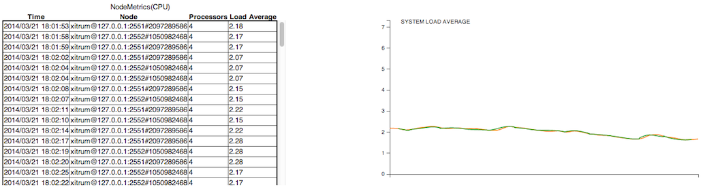

Xitrum Guide¶

Есть также английский, японский, корейский и вьетнамский версии.
Введение¶
+--------------------+
| Клиенты |
+--------------------+
|
+--------------------+
| Netty |
+--------------------+
| Xitrum |
| +----------------+ |
| | HTTP(S) Сервер | |
| |----------------| |
| | Web фреймворк | | <- Akka, Hazelcast -> Другие экземпляры
| +----------------+ |
+--------------------+
| Приложение |
+--------------------+
Xitrum - асинхронный и масштабируемый Scala веб фреймворк и HTTP(S) сервер. Он построен на базе Netty и Akka.
Из отзывов пользователей:
Wow, this is a really impressive body of work, arguably the most complete Scala framework outside of Lift (but much easier to use).
Xitrum is truly a full stack web framework, all the bases are covered, including wtf-am-I-on-the-moon extras like ETags, static file cache identifiers & auto-gzip compression. Tack on built-in JSON converter, before/around/after interceptors, request/session/cookie/flash scopes, integrated validation (server & client-side, nice), built-in cache layer (Hazelcast), i18n a la GNU gettext, Netty (with Nginx, hello blazing fast), etc. and you have, wow.
Возможности¶
Безопасный относительно типов (typesafe) во всех отношениях где это возможно.
Полностью асинхронный. Необязательно слать ответ на запрос немедленно, можно запустить сложные вычисления и дать ответ, когда он будет готов. Поддерживаются Long polling, chunked response, WebSockets, SockJs, EventStream.
Встроенный веб сервер основан на высоко производительном Netty, отдача статических файлов сравнима по производительности с Nginx.
Обширные возможности для кэширования как на серверной так и на клиентской стороне. На уровне сервера файлы маленького размера сохраняются в памяти, большие файлы пересылаются с использованием NIO’s zero copy. На уровне фреймворка есть возможность сохранить в кэш страницу, действие (action) или объект в стиле Rails. Учтены рекомендации Google. Ревалидация кэша возможна в любой момент.
Для статических файлов поддерживаются Range запросы. Эта функция необходима для отдачи видео файлов.
Поддержка CORS.
Автоматический расчет маршрутов (routes) приложения в стиле JAX-RS и Rails. Нет необходимости в объявлении маршрутов в каком-либо файле. Благодаря этому Xitrum позволяет объединять несколько приложений в одно. Все маршруты из jar файлов объединяются и работают как единое приложение.
Обратная маршрутизация: генерация ссылок на контроллеры и действия.
Генерация документации на основе Swagger Doc.
Автоматическая перезагрузка классов и маршрутов при изменении (не требует перезапуска сервера).
Представления (views) могут быть созданы с использованием Scalate, Scala или xml (во всех случаях происходит проверка типов на этапе компиляции).
Сессии могут хранится в куках или кластеризованны, например, с помощью Hazelcast.
Встроенная валидация с jQuery (опционально).
i18n на основе GNU gettext. Автоматическая генерация pot файлов из исходников. gettext поддерживает множественные и единственные формы числа.
Идеологически Xitrum находится между Scalatra и Lift: более функциональный чем Scalatra и гораздо проще чем Lift. Вы можете очень просто создавать RESTful APIs и postbacks. Xitrum является controller-first фреймворком.
Связанные сcылки список демонстрационных проектов, плагинов и прочее.
Авторы¶
Xitrum - проект с открытым исходным кодом проект, вступайте в официальную Google группу.
Авторы в списке упорядочены по времени их первого вклада в проект.
(*): Участники команды разработки Xitrum.
Как начать¶
Эта глава описывает как создать и запустить Xitrum проект. Предполагается что вы знакомы с операционной системой Linux и у вас установлена Java.
Создание пустого проекта Xitrum¶
Для создания проекта, скачайте файл xitrum-new.zip:
wget -O xitrum-new.zip https://github.com/xitrum-framework/xitrum-new/archive/master.zip
или:
curl -L -o xitrum-new.zip https://github.com/xitrum-framework/xitrum-new/archive/master.zip
Запуск¶
Сложившийся стандарт запуска Scala проектов - использование
SBT. Проект созданный из шаблона уже включает
SBT в директории sbt. Если вы хотите установить SBT самостоятельно, воспользуйтесь
руководством.
Перейдите в директорию созданного проекта и выполните команду sbt/sbt fgRun:
unzip xitrum-new.zip
cd xitrum-new
sbt/sbt fgRun
Данная команда выполнит скачивание всех зависимостей, компиляцию проекта
и запуск main-класса quickstart.Boot, который запустит сервер. В консоль будут напечатаны все
маршруты (routes) проекта:
[INFO] Load routes.cache or recollect routes...
[INFO] Normal routes:
GET / quickstart.action.SiteIndex
[INFO] SockJS routes:
xitrum/metrics/channel xitrum.metrics.XitrumMetricsChannel websocket: true, cookie_needed: false
[INFO] Error routes:
404 quickstart.action.NotFoundError
500 quickstart.action.ServerError
[INFO] Xitrum routes:
GET /webjars/swagger-ui/2.0.17/index xitrum.routing.SwaggerUiVersioned
GET /xitrum/xitrum.js xitrum.js
GET /xitrum/metrics/channel xitrum.sockjs.Greeting
GET /xitrum/metrics/channel/:serverId/:sessionId/eventsource xitrum.sockjs.EventSourceReceive
GET /xitrum/metrics/channel/:serverId/:sessionId/htmlfile xitrum.sockjs.HtmlFileReceive
GET /xitrum/metrics/channel/:serverId/:sessionId/jsonp xitrum.sockjs.JsonPPollingReceive
POST /xitrum/metrics/channel/:serverId/:sessionId/jsonp_send xitrum.sockjs.JsonPPollingSend
WEBSOCKET /xitrum/metrics/channel/:serverId/:sessionId/websocket xitrum.sockjs.WebSocket
POST /xitrum/metrics/channel/:serverId/:sessionId/xhr xitrum.sockjs.XhrPollingReceive
POST /xitrum/metrics/channel/:serverId/:sessionId/xhr_send xitrum.sockjs.XhrSend
POST /xitrum/metrics/channel/:serverId/:sessionId/xhr_streaming xitrum.sockjs.XhrStreamingReceive
GET /xitrum/metrics/channel/info xitrum.sockjs.InfoGET
WEBSOCKET /xitrum/metrics/channel/websocket xitrum.sockjs.RawWebSocket
GET /xitrum/metrics/viewer xitrum.metrics.XitrumMetricsViewer
GET /xitrum/metrics/channel/:iframe xitrum.sockjs.Iframe
GET /xitrum/metrics/channel/:serverId/:sessionId/websocket xitrum.sockjs.WebSocketGET
POST /xitrum/metrics/channel/:serverId/:sessionId/websocket xitrum.sockjs.WebSocketPOST
[INFO] HTTP server started on port 8000
[INFO] HTTPS server started on port 4430
[INFO] Xitrum started in development mode
Во время запуска, все маршруты будут собраны и напечатаны в лог. Это очень удобно иметь список всех маршрутов проекта, если вы планируете написать документацию для своего RESTful API.
Откройте http://localhost:8000/ или https://localhost:4430/ в браузере. В консоль будет напечатана информация о запросе:
[INFO] GET quickstart.action.SiteIndex, 1 [ms]
Импорт проекта в Eclipse¶
Использование Eclipse для написания Scala кода.
Из директории проекта выполните команду:
sbt/sbt eclipse
Файл Eclipse проекта .project будет создан из описание проекта build.sbt.
Откройте Eclipse и импортируйте созданный проект.
Импорт проекта в IntelliJ¶
IntelliJ, поддерживает Scala на очень хорошем уровне.
С установленным его Scala плагин, просто откройте свой проект SBT, Вам не нужно для создания файлов проекта, как с Eclipse.
Автоматическая перезагрузка¶
Xitrum позволяет перезагружать .class файлы (hot swap) без перезапуска программы. Однако, что бы избежать проблем с производительностью и получить более стабильное приложение, эта функция должна быть использована только в режиме разработчика (development mode).
Запуск в IDE¶
Во время разработки в IDE на подобии Eclipse или IntelliJ, автоматически будет происходить перезагрузка кода.
Запуск в SBT¶
При использовании SBT, нужно открыть две консоли:
В первой выполните
sbt/sbt fgRun. Эта команда запустить программу и будет перезагружать .class файлы когда они изменятся.Во второй
sbt/sbt ~compile. При изменении исходных файлов они будут автоматически компилироваться в .class файлы.
В директории sbt расположен agent7.jar.
Его задача заключается в перезагрузке .class файлов в рабочей директории (и под директориях).
Внутри скрипта sbt/sbt, agent7.jar подключается специальной опцией -javaagent:agent7.jar.
DCEVM¶
Обычно JVM позволяет перезагружать только тела методов. Вы можете использовать DCEVM - открытую модификацию Java HotSpot VM, которая позволяет полностью перезагружать классы.
Вы можете установить DCEVM двумя способами:
В первом варианте:
DCEVM будет включен постоянно.
Или будет установлен в качестве «альтернативной» JVM. В этом случае, что бы включить DCEVM, при запуске
javaнужно указывать опцию-XXaltjvm=dcevm. Например, вам нужно добавить-XXaltjvm=dcevmв скриптsbt/sbt.
Если вы используете IDE (например, Eclipse или IntelliJ), вам нужно настроить их на использование DCEVM при работе с вашим проектом.
Если вы используете SBT, вам нужно настроить переменную окружения PATH
так что бы команда java была из DCEVM (не из стандартной JVM). Вам
так же нужен javaagent описанный выше, поскольку DCEVM поддерживает изменения классов,
но сам их не перезагружает.
Список игнорируемых файлов¶
При создании проекта по шаблону, есть ряд файлов которые нужно исключить из системы контроля версий:
.*
log
project/project
project/target
target
tmp
Контроллеры и представления¶
Xitrum располагает тремя видами контроллеров или действий (actions):
стандартный контроллер Action, FutureAction и актор контроллер ActorAction.
Стандартный контроллер (normal action)¶
Реализация данного контроллера синхронная.
import xitrum.Action
import xitrum.annotation.GET
@GET("hello")
class HelloAction extends Action {
def execute() {
respondText("Hello")
}
}
В случае наследования от xitrum.Action, ваш код будет выполнятся в потоке Netty’s IO. Это допустимо только в случае если ваш контроллер очень легковесный и не блокирующий (возвращает ответ немедленно). Иначе Netty не сможет принимать новые подключения или отправлять запросы клиентам.
FutureAction¶
import xitrum.FutureAction
import xitrum.annotation.GET
@GET("hello")
class HelloAction extends FutureAction {
def execute() {
respondText("hi")
}
}
В случае наследования от xitrum.FutureAction, код контроллера будет выполнятся в отдельном потоке (в том же пуле что и ActorAction) не занимая потоки Netty.
Актор контроллер (actor action)¶
Если вы хотите что бы контроллер был актором Akka наследуйтесь от ActorAction:
import scala.concurrent.duration._
import xitrum.ActorAction
import xitrum.annotation.GET
@GET("hello")
class HelloAction extends ActorAction with AppAction {
def execute() {
// See Akka doc about scheduler
import context.dispatcher
context.system.scheduler.scheduleOnce(3 seconds, self, System.currentTimeMillis())
// See Akka doc about "become"
context.become {
case pastTime =>
respondInlineView(s"It's $pastTime Unix ms 3s ago.")
}
}
}
Экземпляр актора будет создан на каждый запрос. Актор будет остановлен в момент закрытия подключения или когда ответ будет отправлен клиенту. Для chunked запросов актор будет остановлен когда будет отправлен последний chunk.
Актор будет выполняться в пуле потоков Akka в системе с именем «xitrum».
Отправка ответа клиенту¶
Что бы отправить данные клиенту используются функции:
respondView: при ответе использует шаблон ассоциированный с контроллеромrespondInlineView: при ответе использует шаблон переданный как аргументrespondText("hello"): ответ строкой «plain/text»respondHtml("<html>...</html>"): ответ строкой «text/html»respondJson(List(1, 2, 3)): преобразовать Scala объект в JSON и ответитьrespondJs("myFunction([1, 2, 3])")respondJsonP(List(1, 2, 3), "myFunction"): совмещение предыдущих двухrespondJsonText("[1, 2, 3]")respondJsonPText("[1, 2, 3]", "myFunction")respondBinary: ответ массивом байтrespondFile: переслать файл с использованием техники zero-copy (aka send-file)respondEventSource("data", "event")
Шаблонизация¶
Каждый контроллер может быть связан с шаблоном Scalate. В этом случае при вызове метода respondView будет задействован данный шаблон для формирования ответа.
scr/main/scala/mypackage/MyAction.scala:
package mypackage
import xitrum.Action
import xitrum.annotation.GET
@GET("myAction")
class MyAction extends Action {
def execute() {
respondView()
}
def hello(what: String) = "Hello %s".format(what)
}
scr/main/scalate/mypackage/MyAction.jade:
- import mypackage.MyAction
!!! 5
html
head
!= antiCsrfMeta
!= xitrumCss
!= jsDefaults
title Welcome to Xitrum
body
a(href={url}) Path to the current action
p= currentAction.asInstanceOf[MyAction].hello("World")
!= jsForView
xitrumCssподключает стандартные CSS встроенные в Xitrum. Вы можете убрать их если они не требуютсяjsDefaultsподключает jQuery, jQuery Validate и пр. Если используется, вызов должен быть размешен в секции <head>jsForViewиспользует функцию контроллераjsAddToViewи включает JS фаргмент в шаблон. Если используется, вызов должен быть в конце шаблона
В шаблонах допускается использование любых методов из трейта xitrum.Action. Дополнительно можно использовать утильные методы Scalate,
такие как unescape (см. Scalate doc).
Синтаксис Jade используется по умолчанию для Scalate. Так же вы можете использовать синтаксис Mustache, Scaml или Ssp. Что бы установить предпочитаемый синтаксис, отредактируйте файл xitrum.conf в директории config.
Кроме этого, метод respondView позволяет переопределять синтаксис шаблона.
respondView(Map("type" ->"mustache"))
currentAction и приведение типов¶
Если известен подкласс контроллера который используется с шаблоном, то можно выполнить
приведение currentAction к этому подклассу.
p= currentAction.asInstanceOf[MyAction].hello("World")
Или так:
- val myAction = currentAction.asInstanceOf[MyAction]; import myAction._
p= hello("World")
p= hello("Scala")
p= hello("Xitrum")
Mustache¶
Важно:
Mustache намеренно ограничивает возможности шаблонизации до минимума логики. Поэтому многие возможности используемые в Jade не применимы в Mustache.
Для передачи моделей из контроллера в шаблон необходимо использовать at:
Контролер:
at("name") = "Jack"
at("xitrumCss") = xitrumCss
Шаблон Mustache:
Мое имя {{name}}
{{xitrumCss}}
Примечание: следующие слова зарезервированы и не могут быть использованы
как ключ в at:
«context»: Scalate объект предоставляющий методы
unescapeи пр.«helper»: текущий контроллер
CoffeeScript¶
Scalate позволяет включать CoffeeScript в шаблоны :coffeescript filter:
body
:coffeescript
alert "Hello, Coffee!"
Результат:
<body>
<script type='text/javascript'>
//<![CDATA[
(function() {
alert("Hello, Coffee!");
}).call(this);
//]]>
</script>
</body>
Однако, эта возможность работает достаточно медленно:
jade+javascript+1thread: 1-2ms for page
jade+coffesscript+1thread: 40-70ms for page
jade+javascript+100threads: ~40ms for page
jade+coffesscript+100threads: 400-700ms for page
Рекомендуется самостоятельно компилировать CoffeeScript в JavaScript для оптимизации производительности.
Макет (Layout)¶
При использовании respondView или respondInlineView, Xitrum
выполняет шаблонизацию в строку, и присваивает результат в переменную renderedView.
Затем, Xitrum вызывает метод layout текущего контроллера и отправляет результат работы
этого метода как ответ сервера.
По умолчанию метод layout просто возвращает переменную renderedView.
В случае перекрытия этого метода появляется возможность декорировать шаблон.
Таким образом достаточно просто реализовать произвольный макет (layout) для всех контроллеров.
Механизм layout очень простой и понятный. Никакой магии. Для удобства, вы можете
думать что Xitrum не поддерживает макеты (layout), есть только метод layout и вы вольны
делать с ним все что захотите.
Обычно, создается базовый класс для реализация стандартного макета:
src/main/scala/mypackage/AppAction.scala
package mypackage
import xitrum.Action
trait AppAction extends Action {
override def layout = renderViewNoLayout[AppAction]()
}
src/main/scalate/mypackage/AppAction.jade
!!! 5
html
head
!= antiCsrfMeta
!= xitrumCss
!= jsDefaults
title Welcome to Xitrum
body
!= renderedView
!= jsForView
src/main/scala/mypackage/MyAction.scala
package mypackage
import xitrum.annotation.GET
@GET("myAction")
class MyAction extends AppAction {
def execute() {
respondView()
}
def hello(what: String) = "Hello %s".format(what)
}
scr/main/scalate/mypackage/MyAction.jade:
- import mypackage.MyAction
a(href={url}) Path to the current action
p= currentAction.asInstanceOf[MyAction].hello("World")
Макет в отдельном файле¶
AppAction.scala
import xitrum.Action
import xitrum.view.DocType
trait AppAction extends Action {
override def layout = DocType.html5(
<html>
<head>
{antiCsrfMeta}
{xitrumCss}
{jsDefaults}
<title>Welcome to Xitrum</title>
</head>
<body>
{renderedView}
{jsForView}
</body>
</html>
)
}
Использование макета непосредственно в respondView¶
val specialLayout = () =>
DocType.html5(
<html>
<head>
{antiCsrfMeta}
{xitrumCss}
{jsDefaults}
<title>Welcome to Xitrum</title>
</head>
<body>
{renderedView}
{jsForView}
</body>
</html>
)
respondView(specialLayout _)
Внутренние представления¶
Обычно, шаблон описывается в отдельном файле, но существует возможность писать шаблоны непосредственно в контроллере:
import xitrum.Action
import xitrum.annotation.GET
@GET("myAction")
class MyAction extends Action {
def execute() {
val s = "World" // Will be automatically HTML-escaped
respondInlineView(
<p>Hello <em>{s}</em>!</p>
)
}
}
Фрагменты¶
MyAction.jade:
scr/main/scalate/mypackage/MyAction.jade
Шаблонизация с помощью фрагмента
scr/main/scalate/mypackage/_MyFragment.jade:
renderFragment[MyAction]("MyFragment")
Можно записать короче, если MyAction - текущий контроллер:
renderFragment("MyFragment")
Использование шаблона смежного контроллера¶
Использование метода respondView[ClassName]():
package mypackage
import xitrum.Action
import xitrum.annotation.{GET, POST}
@GET("login")
class LoginFormAction extends Action {
def execute() {
// Respond scr/main/scalate/mypackage/LoginFormAction.jade
respondView()
}
}
@POST("login")
class DoLoginAction extends Action {
def execute() {
val authenticated = ...
if (authenticated)
redirectTo[HomeAction]()
else
// Reuse the view of LoginFormAction
respondView[LoginFormAction]()
}
}
Один контроллер - много представлений¶
Использование нескольких шаблонов для одного контроллера:
package mypackage
import xitrum.Action
import xitrum.annotation.GET
// Шаблоны автоматически не маршрутизируются
// scr/main/scalate/mypackage/HomeAction_NormalUser.jade
// scr/main/scalate/mypackage/HomeAction_Moderator.jade
// scr/main/scalate/mypackage/HomeAction_Admin.jade
trait HomeAction_NormalUser extends Action
trait HomeAction_Moderator extends Action
trait HomeAction_Admin extends Action
@GET("")
class HomeAction extends Action {
def execute() {
val userType = ...
userType match {
case NormalUser => respondView[HomeAction_NormalUser]()
case Moderator => respondView[HomeAction_Moderator]()
case Admin => respondView[HomeAction_Admin]()
}
}
}
Использование дополнительных не автоматических маршрутов выглядит утомительно, однако это более безопасно относительно типов (typesafe).
Вы также можете использовать `` String`` указать местоположение шаблона:
respondView("mypackage/HomeAction_NormalUser")
respondView("mypackage/HomeAction_Moderator")
respondView("mypackage/HomeAction_Admin")
Компонент¶
Компоненты позволяют создавать переиспользуемое поведение и могут быть включены во множество представлений. Концептуально компонент очень близок к контроллеру, но:
Не имеет маршрутов, поэтому отсутствует метод
execute.Компонент не отправляет ответ сервера, он просто выполняет шаблонизацию фрагмента. Поэтому внутри компонента, вместо вызовов
respondXXX, необходимо использоватьrenderXXX.Как и контроллеры, компонент может иметь ни одного, одно или множество связанных представлений.
package mypackage
import xitrum.{FutureAction, Component}
import xitrum.annotation.GET
class CompoWithView extends Component {
def render() = {
// Render associated view template, e.g. CompoWithView.jade
// Note that this is renderView, not respondView!
renderView()
}
}
class CompoWithoutView extends Component {
def render() = {
"Hello World"
}
}
@GET("foo/bar")
class MyAction extends FutureAction {
def execute() {
respondView()
}
}
MyAction.jade:
- import mypackage._
!= newComponent[CompoWithView]().render()
!= newComponent[CompoWithoutView]().render()
RESTful APIs¶
Разработка RESTful APIs с использованием Xitrum.
import xitrum.Action
import xitrum.annotation.GET
@GET("articles")
class ArticlesIndex extends Action {
def execute() {...}
}
@GET("articles/:id")
class ArticlesShow extends Action {
def execute() {...}
}
Подобным образом описываются POST, PUT, PATCH, DELETE, и OPTIONS запросы. Xitrum автоматически обрабатывает HEAD запросы как GET с пустым ответом.
Для HTTP клиентов не поддерживающих PUT и DELETE (например, обычные браузеры), используется метод POST c параметрами _method=put или _method=delete внутри тела запроса.
При старте веб приложения, Xitrum сканирует аннотации, создает таблицу маршрутизации и печатает ее в лог. Из лога понятно какое API приложение поддерживает на данный момент:
[INFO] Routes:
GET /articles quickstart.action.ArticlesIndex
GET /articles/:id quickstart.action.ArticlesShow
Маршруты (routes) автоматически строятся в духе JAX-RS и Rails. Нет необходимости объявлять все маршруты в одном месте. Допускается включать одно приложение в другое. Например, движок блога можно упаковать в JAR файл и подключить его в другое приложение, после этого у приложения появятся все возможности блога. Маршрутизация осуществляется в два направления, можно генерировать URL по контроллеру (обратная маршрутизация). Автоматическое документирование ваших маршрутов можно выполнить используя Swagger Doc.
Кэш маршрутов¶
Для более быстро скорости запуска, маршруты кэшируются в файл routes.cache.
В режиме разработчика, этот файл не используется. В случае изменения зависимостей
содержащих маршруты, необходимо удалить routes.cache. Этот файл не должен попасть
в ваши систему контроля версий.
Очередность маршрутов¶
Возможно вам потребуется организовать маршруты в определенном порядке.
/articles/:id --> ArticlesShow
/articles/new --> ArticlesNew
В данном случае необходимо что бы второй маршрут был проверен первым.
Для этих целей нужно использовать аннотацию First:
import xitrum.annotation.{GET, First}
@GET("articles/:id")
class ArticlesShow extends Action {
def execute() {...}
}
@First // This route has higher priority than "ArticlesShow" above
@GET("articles/new")
class ArticlesNew extends Action {
def execute() {...}
}
Last работает помещает маршрут на обработку последним.
Несколько маршрутов для одного контроллера¶
@GET("image", "image/:format")
class Image extends Action {
def execute() {
val format = paramo("format").getOrElse("png")
// ...
}
}
Точка в маршруте¶
@GET("articles/:id", "articles/:id.:format")
class ArticlesShow extends Action {
def execute() {
val id = param[Int]("id")
val format = paramo("format").getOrElse("html")
// ...
}
}
Регулярные выражения в маршруте¶
Регулярные выражения могут быть использованы для задания ограничений в маршруте:
GET("articles/:id<[0-9]+>")
Обработка не стандартных маршрутов¶
Использование символа / не допускается в именах параметров. Если есть необходимость в его
использовании вы можете определить маршрут следующим образом:
GET("service/:id/proxy/:*")
Например, данный маршрут будет обрабатывать запросы:
/service/123/proxy/http://foo.com/bar
Извлечение значение из части :*:
val url = param("*") // Будет "http://foo.com/bar"
Ссылка на контроллер¶
Xitrum пытается быть достаточно безопасным. Не пишите ссылки самостоятельно (в явном виде). Используйте генератор ссылок:
<a href={url[ArticlesShow]("id" -> myArticle.id)}>{myArticle.title}</a>
Редирект на контроллер¶
Читайте подробнее про редирект.
import xitrum.Action
import xitrum.annotation.{GET, POST}
@GET("login")
class LoginInput extends Action {
def execute() {...}
}
@POST("login")
class DoLogin extends Action {
def execute() {
...
// After login success
redirectTo[AdminIndex]()
}
}
GET("admin")
class AdminIndex extends Action {
def execute() {
...
// Check if the user has not logged in, redirect him to the login page
redirectTo[LoginInput]()
}
}
Допускается делать редирект на тот же самый контроллер с помощью метода redirecToThis().
Форвардинг (перенаправление) на контроллер¶
Используйте forwardTo[AnotherAction](). redirectTo заставляет браузер делать новый запрос, в то
время как forwardTo работает в рамках одного запроса.
Определение Ajax запроса¶
Используйте isAjax.
// В контроллере
val msg = "A message"
if (isAjax)
jsRender("alert(" + jsEscape(msg) + ")")
else
respondText(msg)
Anti-CSRF¶
Для запросов отличных от GET Xitrum автоматически защищает приложение от Cross-site request forgery атаки.
Включите в шаблон antiCsrfMeta:
import xitrum.Action
import xitrum.view.DocType
trait AppAction extends Action {
override def layout = DocType.html5(
<html>
<head>
{antiCsrfMeta}
{xitrumCss}
{jsDefaults}
<title>Welcome to Xitrum</title>
</head>
<body>
{renderedView}
{jsForView}
</body>
</html>
)
}
Тогда секция <head> будет включать в себя csrf-token:
<!DOCTYPE html>
<html>
<head>
...
<meta name="csrf-token" content="5402330e-9916-40d8-a3f4-16b271d583be" />
...
</head>
...
</html>
Этот токен будет автоматически включен во все Ajax запросы jQuery как заголовок
X-CSRF-Token если вы подключите xitrum.js. xitrum.js подключается вызовом jsDefaults. Если вы не хотите
использовать jsDefaults, вы можете подключить xitrum.js следующим образом (или посылать токен самостоятельно):
<script type="text/javascript" src={url[xitrum.js]}></script>
antiCsrfInput и antiCsrfToken¶
Xitrum использует CSRF токен из заголовка запроса с именем X-CSRF-Token. Если заголовок
не установлен, Xitrum берет значение из параметра csrf-token переданного в теле запроса
(не из URL).
Если вы вручную создаете формы, и не используйте мета тэг и xitrum.js как сказано выше,
то вам нужно использовать методы контроллера antiCsrfInput или antiCsrfToken:
form(method="post" action={url[AdminAddGroup]})
!= antiCsrfInput
form(method="post" action={url[AdminAddGroup]})
input(type="hidden" name="csrf-token" value={antiCsrfToken})
SkipCsrfCheck¶
Для некоторые API не требуется защита от CSRF атак, в этом случае проще всего пропустить эту проверку. Для этого дополнительно наследуйте свой контроллер от трейта xitrum.SkipCsrfCheck:
import xitrum.{Action, SkipCsrfCheck}
import xitrum.annotation.POST
trait Api extends Action with SkipCsrfCheck
@POST("api/positions")
class LogPositionAPI extends Api {
def execute() {...}
}
@POST("api/todos")
class CreateTodoAPI extends Api {
def execute() {...}
}
Управление маршрутами¶
Xitrum автоматически собирает маршруты при запуске. Для управления этими маршрутами используйте xitrum.Config.routes.
Например:
import xitrum.{Config, Server}
object Boot {
def main(args: Array[String]) {
// Вы можете поправить маршруты до запуска сервера
val routes = Config.routes
// Удаление маршрутов относящихся к конкретному классу
routes.removeByClass[MyClass]()
if (demoVersion) {
// Удаление маршрутов начинающихся с префикса
routes.removeByPrefix("premium/features")
// Допустимый вариант
routes.removeByPrefix("/premium/features")
}
...
Server.start()
}
}
Получение полных (сырых) данных запроса¶
Обычно когда mime тип запроса не соответствует application/x-www-form-urlencoded,
предполагается что содержимое запроса будет обработано в ручном режиме.
Получение тела запроса в виде строки:
val body = requestContentString
JSON:
val myJValue = requestContentJValue // => JSON4S (http://json4s.org) JValue
val myMap = xitrum.util.SeriDeseri.fromJValue[Map[String, Int]](myJValue)
Если вам нужно получить полный доступ к запросу, используйте request.getContent. Он возвращает ByteBuf.
Документирование API¶
Из коробки вы можете документировать API и использованием Swagger.
Добавьте аннотацию @Swagger к контроллеру который нужно задокументировать
Xitrum генерирует /xitrum/swagger.json.
Этот файл может быть использован в Swagger UI
для генерации интерактивной документации.
Xitrum включает Swagger UI, по пути /xitrum/swagger-ui,
например http://localhost:8000/xitrum/swagger-ui.

Рассмотрим пример:
import xitrum.{Action, SkipCsrfCheck}
import xitrum.annotation.{GET, Swagger}
@Swagger(
Swagger.Tags("image", "APIs to create images"),
Swagger.Description("Dimensions should not be bigger than 2000 x 2000"),
Swagger.OptStringQuery("text", "Text to render on the image, default: Placeholder"),
Swagger.Produces("image/png"),
Swagger.Response(200, "PNG image"),
Swagger.Response(400, "Width or height is invalid or too big")
)
trait ImageApi extends Action with SkipCsrfCheck {
lazy val text = paramo("text").getOrElse("Placeholder")
}
@GET("image/:width/:height")
@Swagger( // <-- Inherits other info from ImageApi
Swagger.Summary("Generate rectangle image"),
Swagger.IntPath("width"),
Swagger.IntPath("height")
)
class RectImageApi extends Api {
def execute {
val width = param[Int]("width")
val height = param[Int]("height")
// ...
}
}
@GET("image/:width")
@Swagger( // <-- Inherits other info from ImageApi
Swagger.Summary("Generate square image"),
Swagger.IntPath("width")
)
class SquareImageApi extends Api {
def execute {
val width = param[Int]("width")
// ...
}
}
JSON для Swagger
будет генерироваться при доступе /xitrum/swagger.
Swagger UI использует эту информацию для генерации интерактивной документации к API.
Возможные параметры на подобии Swagger.IntPath определяются шаблоном:
<Тип переменной><Тип параметра>(обязательный параметр)Opt<Тип переменной><Тип параметра>(опциональный параметр)
Типы переменных: Byte, Int, Int32, Int64, Long, Number, Float, Double, String, Boolean, Date, DateTime
Типы параметров: Path, Query, Body, Header, Form
Подробнее о типах переменных и типах параметров.
Шаблонизация¶
Выбранный шаблонизатор используется во время вызова методов renderView, renderFragment, или respondView.
Настройка¶
В конфигурационном файле config/xitrum.conf, шаблонизатор может быть указан двумя способами:
template = my.template.EngineClassName
Или:
template {
"my.template.EngineClassName" {
option1 = value1
option2 = value2
}
}
По умолчанию используется xitrum-scalate в качестве шаблонизатора.
Отключение шаблонизатора¶
В случае если ваш проект предоставляет просто API, обычно шаблонизатор не требуется. В этом случае
допускается убрать шаблонизатор из проекта что бы сделать его легче. Просто удалите
templateEngine в config/xitrum.conf.
Реализация своего шаблонизатора¶
Для реализации своего шаблонизатора, создайте класс реализующий xitrum.view.TemplateEngine. После этого укажите имя этого класса в конфигурации config/xitrum.conf.
Пример реализации xitrum-scalate.
Postbacks¶
Клиентами веб приложения могут быть:
другие приложения или устройства: например, RESTful APIs которое широко используется смартфонами, другими веб сайтами
люди: например, интерактивные веб сайты предполагающие сложные взаимодействия
Как фреймворк, Xitrum нацелен на создание легких решений для этих задача. Для решения первой задачи, используются RESTful контроллеры. Для решения второй задачи, в том числе существует возможность использовать postback. Подробнее о технологии postback:
Реализация в Xitrum’s сделана в стиле Nitrogen.
Шаблон¶
AppAction.scala
import xitrum.Action
import xitrum.view.DocType
trait AppAction extends Action {
override def layout = DocType.html5(
<html>
<head>
{antiCsrfMeta}
{xitrumCss}
{jsDefaults}
<title>Welcome to Xitrum</title>
</head>
<body>
{renderedView}
{jsForView}
</body>
</html>
)
}
Форма¶
Articles.scala
import xitrum.annotation.{GET, POST, First}
import xitrum.validator._
@GET("articles/:id")
class ArticlesShow extends AppAction {
def execute() {
val id = param("id")
val article = Article.find(id)
respondInlineView(
<h1>{article.title}</h1>
<div>{article.body}</div>
)
}
}
@First // Этот маршрут будет обработан перед "show"
@GET("articles/new")
class ArticlesNew extends AppAction {
def execute() {
respondInlineView(
<form data-postback="submit" action={url[ArticlesCreate]}>
<label>Title</label>
<input type="text" name="title" class="required" /><br />
<label>Body</label>
<textarea name="body" class="required"></textarea><br />
<input type="submit" value="Save" />
</form>
)
}
}
@POST("articles")
class ArticlesCreate extends AppAction {
def execute() {
val title = param("title")
val body = param("body")
val article = Article.save(title, body)
flash("Article has been saved.")
jsRedirectTo(show, "id" -> article.id)
}
}
При возникновении события submit формы, состояние формы будет отправлено на сервер в контроллер ArticlesCreate.
Атрибут action формы зашифрован. Зашифрованный URL выступает в роли anti-CSRF токена.
Другие элементы (не формы)¶
Postback может быть отправлен для любого элемента, не только для формы.
Вот пример для ссылки:
<a href="#" data-postback="click" action={postbackUrl[LogoutAction]}>Logout</a>
Переход по ссылке выполнит отправку состояния в LogoutAction.
Диалог подтверждения¶
Отображение диалоговых окон подтверждения:
<a href="#" data-postback="click"
action={postbackUrl[LogoutAction]}
data-confirm="Do you want to logout?">Logout</a>
В случае отказа от продолжения (при нажатии кнопки «Cancel») postback не будет отправлен.
Дополнительные параметры¶
В случае формы вы можете добавлять дополнительные поля <input type="hidden"... для отправки
дополнительных параметров как часть postback.
Для других элементов, вы можете поступать так:
<a href="#"
data-postback="click"
action={postbackUrl[ArticlesDestroy]("id" -> item.id)}
data-params="_method=delete"
data-confirm={"Do you want to delete %s?".format(item.name)}>Delete</a>
Или вы можете поместить дополнительные параметры в смежную форму:
<form id="myform" data-postback="submit" action={postbackUrl[SiteSearch]}>
Search:
<input type="text" name="keyword" />
<a class="pagination"
href="#"
data-postback="click"
data-form="#myform"
action={postbackUrl[SiteSearch]("page" -> page)}>{page}</a>
</form>
Используйте селектор #myform для получения формы с дополнительными параметрами.
Отображение анимации во время Ajax загрузки¶
By default, this animated GIF image is displayed while Ajax is loading:

To customize, please call this JS snippet after including jsDefaults (which includes
xitrum.js)
in your view template:
// target: The element that triggered the postback
xitrum.ajaxLoading = function(target) {
// Called when the animation should be displayed when the Ajax postback is being sent.
var show = function() {
...
};
// Called when the animation should be stopped after the Ajax postback completes.
var hide = function() {
...
};
return {show: show, hide: hide};
};
XML¶
Scala позволяет использовать XML литералы. Xitrum позволяет использовать такую возможность как своеобразный «шаблонизатор»:
Scala проверяет синтаксис XML во время компиляции: представления безопасны относительно типа.
Scala автоматически экранирует XML: представления по умолчанию защищены от XSS атак.
Ниже приведены некоторые советы.
Отключения экранирования XML¶
Используйте scala.xml.Unparsed:
import scala.xml.Unparsed
<script>
{Unparsed("if (1 < 2) alert('Xitrum rocks');")}
</script>
Или <xml:unparsed>:
<script>
<xml:unparsed>
if (1 < 2) alert('Xitrum rocks');
</xml:unparsed>
</script>
<xml:unparsed> не отображается в выводе:
<script>
if (1 < 2) alert('Xitrum rocks');
</script>
Группировка XML элементов¶
<div id="header">
{if (loggedIn)
<xml:group>
<b>{username}</b>
<a href={url[LogoutAction]}>Logout</a>
</xml:group>
else
<xml:group>
<a href={url[LoginAction]}>Login</a>
<a href={url[RegisterAction]}>Register</a>
</xml:group>}
</div>
<xml:group> не будет отображаться в выводе, например в случае пользователя прошедшего аутентификацию:
<div id="header">
<b>My username</b>
<a href="/login">Logout</a>
</div>
Отображение XHTML¶
Xitrum отображает представления как XHTML автоматически. Допускается делать это самостоятельно:
import scala.xml.Xhtml
val br = <br />
br.toString // => <br></br>, some browsers will render this as 2 <br />s
Xhtml.toXhtml(<br />) // => "<br />"
JavaScript и JSON¶
JavaScript¶
Xitrum включает jQuery (опционально) с дополнительным набором утильных функций jsXXX.
Вставка JavaScript фрагментов в представление¶
В контроллере вы можете использовать метод jsAddToView (множество раз, если необходимо):
class MyAction extends AppAction {
def execute() {
...
jsAddToView("alert('Hello')")
...
jsAddToView("alert('Hello again')")
...
respondInlineView(<p>My view</p>)
}
}
В шаблоне метод jsForView:
import xitrum.Action
import xitrum.view.DocType
trait AppAction extends Action {
override def layout = DocType.html5(
<html>
<head>
{antiCsrfMeta}
{xitrumCss}
{jsDefaults}
</head>
<body>
<div id="flash">{jsFlash}</div>
{renderedView}
{jsForView}
</body>
</html>
)
Отправка JavaScript непосредственно (без представления)¶
Для отправки JavaScript:
jsRespond("$('#error').html(%s)".format(jsEscape(<p class="error">Could not login.</p>)))
Для редиректа:
jsRedirectTo("http://cntt.tv/")
jsRedirectTo[LoginAction]()
JSON¶
Xitrum включает JSON4S. Пожалуйста прочтите документацию проекта о том как считывать и генерировать JSON.
Конвертация case объекта в строку JSON:
import xitrum.util.SeriDeseri
case class Person(name: String, age: Int, phone: Option[String])
val person1 = Person("Jack", 20, None)
val json = SeriDeseri.toJson(person1)
val person2 = SeriDeseri.fromJson[Person](json)
Отправка JSON клиенту:
val scalaData = List(1, 2, 3) // Например
respondJson(scalaData)
JSON так же полезен для написания конфигурационных файлов со вложенными структурами. Смотри Загрузка конфигурационных файлов.
Плагин для Knockout.js¶
Асинхронная обработка запросов¶
Основные методы для отправки ответа сервером:
respondView: при ответе использует шаблон ассоциированный с контроллеромrespondInlineView: при ответе использует шаблон переданный как аргументrespondText("hello"): ответ строкой «plain/text»respondHtml("<html>...</html>"): ответ строкой «text/html»respondJson(List(1, 2, 3)): преобразовать Scala объект в JSON и ответитьrespondJs("myFunction([1, 2, 3])")respondJsonP(List(1, 2, 3), "myFunction"): совмещение предыдущих двухrespondJsonText("[1, 2, 3]")respondJsonPText("[1, 2, 3]", "myFunction")respondBinary: ответ массивом байтrespondFile: переслать файл с использованием техники zero-copy (aka send-file)respondEventSource("data", "event")
Xitrum автоматически не осуществляет отправку ответа клиенту. Вы должны явно вызвать один из методов respondXXX
что бы отправить ответ клиенту. Если вы не вызовете метод``respondXXX``, Xitrum будет поддерживать HTTP соединение,
до тех пор пока не будет вызван метод respondXXX.
Что бы убедиться что соединение открыто используйте метод channel.isOpen.
Вы можете использовать добавить слушателя используя метод addConnectionClosedListener:
addConnectionClosedListener {
// Соединение было закрыто
// Необходимо освободить ресурсы
}
Ввиду асинхронной природы, ответ сервера не посылается немедленно.
respondXXX возвращает экземпляр ChannelFuture.
Его можно использовать для выполнения действий в момент кода ответ будет действительно отправлен.
Например, если вы хотите закрыть подключение сразу после отправки запроса:
import io.netty.channel.{ChannelFuture, ChannelFutureListener}
val future = respondText("Hello")
future.addListener(new ChannelFutureListener {
def operationComplete(future: ChannelFuture) {
future.getChannel.close()
}
})
Или проще:
respondText("Hello").addListener(ChannelFutureListener.CLOSE)
WebSocket¶
import scala.runtime.ScalaRunTime
import xitrum.annotation.WEBSOCKET
import xitrum.{WebSocketAction, WebSocketBinary, WebSocketText, WebSocketPing, WebSocketPong}
@WEBSOCKET("echo")
class EchoWebSocketActor extends WebSocketAction {
def execute() {
// Here you can extract session data, request headers etc.
// but do not use respondText, respondView etc.
// To respond, use respondWebSocketXXX like below.
log.debug("onOpen")
context.become {
case WebSocketText(text) =>
log.info("onTextMessage: " + text)
respondWebSocketText(text.toUpperCase)
case WebSocketBinary(bytes) =>
log.info("onBinaryMessage: " + ScalaRunTime.stringOf(bytes))
respondWebSocketBinary(bytes)
case WebSocketPing =>
log.debug("onPing")
case WebSocketPong =>
log.debug("onPong")
}
}
override def postStop() {
log.debug("onClose")
super.postStop()
}
}
Актор будет создан при открытии подключения. И остановлен когда:
Соединение будет разорвано
WebSocket закроет подключение
Используйте следующие методы для отправки WebSocket сообщений (frame):
respondWebSocketTextrespondWebSocketBinaryrespondWebSocketPingrespondWebSocketClose
Метод respondWebSocketPong не предусмотрен, потому что Xitrum автоматически отправляет «pong» сообщение в ответ на «ping».
Для получения ссылки на контроллер:
val url = absWebSocketUrl[EchoWebSocketActor]
SockJS¶
SockJS предоставляет JavaScript объект эмитирующий поддержку WebSocket, для браузеров которые не поддерживают этот стандарт. SockJS пытается использовать WebSocket если он доступен в браузере. В другом случае будет создан эмитирующий объект.
Если вы хотите использовать WebSocket API во всех браузерах, то следует использовать SockJS вместо WebSocket.
<script>
var sock = new SockJS('http://mydomain.com/path_prefix');
sock.onopen = function() {
console.log('open');
};
sock.onmessage = function(e) {
console.log('message', e.data);
};
sock.onclose = function() {
console.log('close');
};
</script>
Xitrum включает файл SockJS по умолчанию. В шаблоне следует написать:
...
html
head
!= jsDefaults
...
SockJS подразумевает наличие части реализации на сервере. Xitrum автоматически ее реализует:
import xitrum.{Action, SockJsAction, SockJsText}
import xitrum.annotation.SOCKJS
@SOCKJS("echo")
class EchoSockJsActor extends SockJsAction {
def execute() {
// To respond, use respondSockJsXXX like below
log.info("onOpen")
context.become {
case SockJsText(text) =>
log.info("onMessage: " + text)
respondSockJsText(text)
}
}
override def postStop() {
log.info("onClose")
super.postStop()
}
}
Актор будет создан при открытии новой SockJS сессии. И остановлен когда сессия будет закрыта.
Для отправки SockJS сообщений используйте методы:
respondSockJsTextrespondSockJsClose
Обычно использование кук не подходит для SockJS. Если вам нужна авторизация внутри сессии, то
для каждой страницы присвойте токен и используйте его в SockJS сессии, для валидации на серверной стороне.
В сущности это повторение механизма куки для SockJS.
Подробнее о настройке кластера SockJS, смотрите раздел Кластерезация с Akka.
Chunked ответ¶
Для отправки chunked ответа:
Вызовите метод
setChunkedОтправляйте данные методами
respondXXX, столько раз сколько нужноПоследний ответ отправьте методом
respondLastChunk
Chunked ответы имеют множество применений. Например, когда нужно генерировать большой документ который не помещается в памяти, вы можете генерировать этот документ частями и отправлять их последовательно:
// "Cache-Control" загаловок будет установлен в:
// "no-store, no-cache, must-revalidate, max-age=0"
//
// Важно "Pragma: no-cache" привязывается к запросу, а не к ответу:
// http://palizine.plynt.com/issues/2008Jul/cache-control-attributes/
setChunked()
val generator = new MyCsvGenerator
generator.onFirstLine { line =>
val future = respondText(header, "text/csv")
future.addListener(new ChannelFutureListener {
def operationComplete(future: ChannelFuture) {
if (future.isSuccess) generator.next()
}
}
}
generator.onNextLine { line =>
val future = respondText(line)
future.addListener(new ChannelFutureListener {
def operationComplete(future: ChannelFuture) {
if (future.isSuccess) generator.next()
}
})
}
generator.onLastLine { line =>
val future = respondText(line)
future.addListener(new ChannelFutureListener {
def operationComplete(future: ChannelFuture) {
if (future.isSuccess) respondLastChunk()
}
})
}
generator.generate()
Замечания:
Заголовки отправляются при первом вызове
respondXXX.Опционально, вы можете отправить дополнительные заголовки с вызовом метода
respondLastChunkКэш страницы и контроллера не может быть использован совместно с chunked ответами.
Используя chunked ответ вместе с ActorAction, легко реализовать
Facebook BigPipe.
Бесконечный iframe¶
Chunked ответ может быть использован для реализации Comet.
Страница которая включает iframe:
...
<script>
var functionForForeverIframeSnippetsToCall = function() {...}
</script>
...
<iframe width="1" height="1" src="path/to/forever/iframe"></iframe>
...
Контроллер который последовательно отправляет <script>:
// Подготовка к вечному iframe
setChunked()
// Необходимо отправить например "123" для некоторых браузеров
respondText("<html><body>123", "text/html")
// Большинство клиентов (даже curl!) не выполняют тело <script> немедленно,
// необходимо отправить около 2KB данных что бы обойти эту проблему
for (i <- 1 to 100) respondText("<script></script>\n")
Позднее, когда вам нужно отправить данные браузеру, просто используйте шаблон:
if (channel.isOpen)
respondText("<script>parent.functionForForeverIframeSnippetsToCall()</script>\n")
else
// Соединение было закрыто, необходимо освободить ресурсы
// Вы можете использовать так же ``addConnectionClosedListener``.
Event Source¶
Смотри http://dev.w3.org/html5/eventsource/
Event Source ответ, это специальный тип chunked ответа. Данные должны быть в кодировке UTF-8.
Для ответа в формате event source, используйте метод respondEventSource столько раз сколько нужно.
respondEventSource("data1", "event1") // Имя события "event1"
respondEventSource("data2") // Имя события устанавливается в "message" по умолчанию
Статичные файлы¶
Отправка статических файлов с диска¶
Шаблонная директория Xitrum проекта:
config
public
favicon.ico
robots.txt
404.html
500.html
img
myimage.png
css
mystyle.css
js
myscript.js
src
build.sbt
Xitrum использует директорию public для хранения статических файлов.
Для генерации ссылок на статические файлы:
/img/myimage.png
/css/mystyle.css
/css/mystyle.min.css
Используйте шаблон:
<img src={publicUrl("img/myimage.png")} />
Для работы с обычными файлами в режиме разработчика и их минимизированными версиями (например, mystyle.css и mystyle.min.css), используйте шаблон:
<img src={publicUrl("css", "mystyle.css", "mystyle.min.css")} />
Для отправки файла с диска из контроллера используйте метод respondFile.
respondFile("/absolute/path")
respondFile("path/relative/to/the/current/working/directory")
Для оптимизации работы со статическими файлами, вы можете избежать использование не нужны файлов ограничив их маской (фильтром на основе регулярного выражения). Если запрос не будет соответствовать регулярному выражению, Xitrum ответит страницей 404 на этот зарос.
Смотри pathRegex в config/xitrum.conf.
index.html и обработка отсутствующих маршрутов¶
Если не существует контроллера для данного URL, например /foo/bar (или /foo/bar/),
Xitrum попытается найти подходящий статический файл public/foo/bar/index.html
(в директории «public»). Если файл существует, то он будет отправлен клиенту.
404 и 500¶
404.html и 500.html в директории public используются когда маршрут не обнаружен или на сервере произошла ошибка.
Пример использования своего собственного обработчика ошибок:
import xitrum.Action
import xitrum.annotation.{Error404, Error500}
@Error404
class My404ErrorHandlerAction extends Action {
def execute() {
if (isAjax)
jsRespond("alert(" + jsEscape("Not Found") + ")")
else
renderInlineView("Not Found")
}
}
@Error500
class My500ErrorHandlerAction extends Action {
def execute() {
if (isAjax)
jsRespond("alert(" + jsEscape("Internal Server Error") + ")")
else
renderInlineView("Internal Server Error")
}
}
Код ответа устанавливается в 404 или 500 еще до того как код контроллера будет запущен, соответственно вам не нужно устанавливать его самостоятельно.
Использование файлов ресурсов в соответствии с WebJars¶
WebJars¶
WebJars предоставляет множество библиотек которые вы можете объявить как зависимости вашего проекта.
Например, для использования Underscore.js,
достаточно прописать в build.sbt:
libraryDependencies += "org.webjars" % "underscorejs" % "1.6.0-3"
После этого, в шаблоне .jade:
script(src={webJarsUrl("underscorejs/1.6.0", "underscore.js", "underscore-min.js")})
Xitrum будет автоматически использовать underscore.js в режиме разработчика, и
underscore-min.js в боевом режиме.
Результат будет таким:
/webjars/underscorejs/1.6.0/underscore.js?XOKgP8_KIpqz9yUqZ1aVzw
Для использования в одного и того же файла во всех режимах:
script(src={webJarsUrl("underscorejs/1.6.0/underscore.js")})
Хранение файлов ресурсов внутри .jar файла согласно WebJars¶
Если вы разработчик библиотек и ваша библиотека включает myimage.png, то вы можете сохранить myimage.png внутри .jar файла. Используя WebJars, например:
META-INF/resources/webjars/mylib/1.0/myimage.png
Использование в проекте:
<img src={webJarsUrl("mylib/1.0/myimage.png")} />
Во всех режимах URL будет:
/webjars/mylib/1.0/myimage.png?xyz123
Ответ файлом из classpath¶
Для ответа файлом находящимся внутри classpath (или внутри .jar файла), даже если файл хранится не по стандарту WebJars:
respondResource("path/relative/to/the/classpath/element")
Например:
respondResource("akka/actor/Actor.class")
respondResource("META-INF/resources/webjars/underscorejs/1.6.0/underscore.js")
respondResource("META-INF/resources/webjars/underscorejs/1.6.0/underscore-min.js")
Кэширование на стороне клиента с ETag и max-age¶
Xitrum автоматически добавляет Etag для статических файлов на диске и в classpath.
ETag для маленьких файлов - MD5 хэш от контента файла. Они кэшируются для последующего использования.
Ключ кэша - (путь до файла, время изменения). Поскольку время изменения на разных серверах
может отличаться, каждый веб сервер в кластере имеет свой собственный ETag кэш.
Для больших файлов, только время изменения используется как ETag. Такая система не совершенна поскольку идентичные файлы на разных серверах могут иметь различный ETag, но это все равно лучше чем не использовать ETag вовсе.
publicUrl и webJarsUrl автоматически добавляют ETag для ссылок. Например:
webJarsUrl("jquery/2.1.1/jquery.min.js")
=> /webjars/jquery/2.1.1/jquery.min.js?0CHJg71ucpG0OlzB-y6-mQ
Xitrum так же устанавливает заголовки max-age и Expires в значение
1 год.
Не переживайте, браузер все равно получит последнею версию файла. Потому что для
файлов хранящихся на диске, после изменении ссылка на файл меняется, т.к. генерируется с
помощью publicUrl и webJarsUrl. Их ETag кэш так же обновляется.
GZIP¶
Xitrum автоматически сжимает текстовые ответы. Проверяется заголовок Content-Type
для определения текстового ответа: text/html, xml/application и пр.
Xitrum всегда сжимает текстовые файлы, но для динамических ответов с целью повышения производительности ответы размером меньше 1 килобайта не сжимаются.
Кэш на стороне сервера¶
Для избежания загрузки файлов с диска, Xitrum кэширует маленькие файлы
(не только текстовые) в LRU кэше (вытеснение давно неиспользуемых).
Смотри small_static_file_size_in_kb и max_cached_small_static_files
в config/xitrum.conf.
Serve flash socket policy file¶
Read about flash socket policy:
http://www.adobe.com/devnet/flashplayer/articles/socket_policy_files.html
http://www.lightsphere.com/dev/articles/flash_socket_policy.html
The protocol to serve flash socket policy file is different from HTTP. To serve:
Modify config/flash_socket_policy.xml appropriately
Modify config/xitrum.conf to enable serving the above file
Запросы, параметры, куки, сессии¶
Запросы¶
Типы параметров¶
Доступны два вида параметров запроса: текстовые параметры и параметры файлы (file upload, бинарные данные)
Текстовые параметры делятся на три вида, каждый имеет тип scala.collection.mutable.Map[String, Seq[String]]:
queryParams: параметры после символа ? в ссылке, например: http://example.com/blah?x=1&y=2bodyTextParams: параметры в теле POST запросаpathParams: параметры в пути запроса, например:GET("articles/:id/:title")
Параметры собираются воедино в переменной textParams в следующем порядке
(от 1 к 3, более поздние перекрывают более ранние).
bodyFileParams имеет тип scala.collection.mutable.Map[String, Seq[FileUpload]].
Доступ к параметрам¶
Из контроллера в можете получить доступ к параметрам напрямую, или вы можете использовать методы доступа.
Для доступа к textParams:
param("x"): возвращаетString, выбрасывает исключение если x не существуетparamo("x"): возвращаетOption[String]params("x"): возвращаетSeq[String]
Вы можете преобразовывать их к другим типам (Int, Long, Fload, Double) автоматически
используя param[Int]("x"), params[Int]("x") и пр. Для преобразования текстовых параметров к
другим типам, перекройте метод convertTextParam.
Для параметров файлов: param[FileUpload]("x"), params[FileUpload]("x") и пр.
Более подробно, смотри Загрузка файлов.
«at»¶
Для передачи данных из контроллера в представление вы можете использовать at.
Тип at - scala.collection.mutable.HashMap[String, Any].
Если вы знакомы с Rails, at это аналог @ из Rails.
Articles.scala
@GET("articles/:id")
class ArticlesShow extends AppAction {
def execute() {
val (title, body) = ... // Например, получаем из базы данных
at("title") = title
respondInlineView(body)
}
}
AppAction.scala
import xitrum.Action
import xitrum.view.DocType
trait AppAction extends Action {
override def layout = DocType.html5(
<html>
<head>
{antiCsrfMeta}
{xitrumCss}
{jsDefaults}
<title>{if (at.isDefinedAt("title")) "My Site - " + at("title") else "My Site"}</title>
</head>
<body>
{renderedView}
{jsForView}
</body>
</html>
)
}
«atJson»¶
atJson - утильный метод который автоматически конвертирует at("key") в JSON.
Метод может быть полезен для передачи моделей напрямую из Scala в JavaScript.
atJson("key") эквивалент xitrum.util.SeriDeseri.toJson(at("key")):
Action.scala
case class User(login: String, name: String)
...
def execute() {
at("user") = User("admin", "Admin")
respondView()
}
Action.ssp
<script type="text/javascript">
var user = ${atJson("user")};
alert(user.login);
alert(user.name);
</script>
RequestVar¶
У at есть недостаток, он не безопасен относительно типов, т.к. основан на не типизированной коллекции. Если вам нужна большая безопасность, можно использовать идею RequestVar, которая оборачивает at.
RVar.scala
import xitrum.RequestVar
object RVar {
object title extends RequestVar[String]
}
Articles.scala
@GET("articles/:id")
class ArticlesShow extends AppAction {
def execute() {
val (title, body) = ... // Get from DB
RVar.title.set(title)
respondInlineView(body)
}
}
AppAction.scala
import xitrum.Action
import xitrum.view.DocType
trait AppAction extends Action {
override def layout = DocType.html5(
<html>
<head>
{antiCsrfMeta}
{xitrumCss}
{jsDefaults}
<title>{if (RVar.title.isDefined) "My Site - " + RVar.title.get else "My Site"}</title>
</head>
<body>
{renderedView}
{jsForView}
</body>
</html>
)
}
Куки¶
Подробнее о куки.
Внутри контроллера, используйте requestCookies, для чтения кук отправленных браузером (тип Map[String, String]).
requestCookies.get("myCookie") match {
case None => ...
case Some(string) => ...
}
Для отправки куки браузеру, создайте экземпляр DefaultCookie и добавьте его к массиву responseCookies который хранит все куки.
val cookie = new DefaultCookie("name", "value")
cookie.setHttpOnly(true) // true: JavaScript не может получить доступ к куки
responseCookies.append(cookie)
Если вы не укажите путь для через метод cookie.setPath(cookiePath), то
будет использован корень сайта как путь (xitrum.Config.withBaseUrl("/")).
Это позволяет избежать случайного дублирования кук.
Что бы удалить куку отправленную браузером, отправить куку с тем же именем и с
временем жизни 0. Браузер посчитает ее истекшей. Для того что бы создать куку
удаляемую при закрытии браузере, установите время жизни в Long.MinValue:
cookie.setMaxAge(Long.MinValue)
Internet Explorer не поддерживает «max-age», но Netty умеет это определять и устанавливает «max-age» и «expires» должны образом. Не беспокойтесь!
Браузер не отправляет атрибуты куки обратно на сервер. Браузер отправляет только пары имя-значение.
Если вы хотите подписать ваши куки, что бы защититься от подделки, используйте
xitrum.util.SeriDeseri.toSecureUrlSafeBase64 и xitrum.util.SeriDeseri.fromSecureUrlSafeBase64.
Подробнее смотри Как шифровать данные.
Допустимые символы в куки¶
Вы можете использовать только ограниченный набор символов в куки.
Например, если вам нужно передать UTF-8 символы, вы должны закодировать их. Можно использовать, например, xitrum.utill.UrlSafeBase64 или xitrum.util.SeriDeseri.
Пример записи куки:
import io.netty.util.CharsetUtil
import xitrum.util.UrlSafeBase64
val value = """{"identity":"example@gmail.com","first_name":"Alexander"}"""
val encoded = UrlSafeBase64.noPaddingEncode(value.getBytes(CharsetUtil.UTF_8))
val cookie = new DefaultCookie("profile", encoded)
responseCookies.append(cookie)
Чтение куки:
requestCookies.get("profile").foreach { encoded =>
UrlSafeBase64.autoPaddingDecode(encoded).foreach { bytes =>
val value = new String(bytes, CharsetUtil.UTF_8)
println("profile: " + value)
}
}
Сессии¶
Хранение сессии, восстановление, шифрование и прочее выполняются автоматически.
В контроллере, вы можете использовать переменную session, которая имеет тип
scala.collection.mutable.Map[String, Any]. Значения в session должны быть
сериализуемые.
Например, что бы сохранить что пользователь прошел авторизацию, вы можете сохранить его имя в сессии:
session("userId") = userId
Позднее, если вы хотите убедиться что пользователь авторизован, вы просто проверяете есть ли его имя в сессии:
if (session.isDefinedAt("userId")) println("This user has logged in")
Хранение идентификатора пользователя и загрузка его из базы данных при каждом запросе обычно является не плохим решением. В этом случае информация о пользователе обновляется при каждым запросе (включая изменения в правах доступа).
session.clear()¶
Одна строчка кода позволяет защититься от фиксации сессии.
Прочитайте статью по ссылке выше что бы узнать подробнее про эту атаку. Для защиты
от атаки, в контроллере который использует логин пользователя, вызовете session.clear().
@GET("login")
class LoginAction extends Action {
def execute() {
...
session.clear() // Сброс сессии прежде чем выполнять какие либо дейтсвияthe session
session("userId") = userId
}
}
Это касается так же контроллера, который выполняет «выход пользователя» (log out).
SessionVar¶
SessionVar, как и RequestVar, это способ сделать сессию более безопасной.
Например, вы хотите хранить имя пользователя в сессии после того как он прошел авторизацию:
Объявите session var:
import xitrum.SessionVar
object SVar {
object username extends SessionVar[String]
}
Присвойте значение во время авторизации:
SVar.username.set(username)
Отобразите имя пользователя:
if (SVar.username.isDefined)
<em>{SVar.username.get}</em>
else
<a href={url[LoginAction]}>Login</a>
Для удаления используйте:
SVar.username.remove()Для сброса всей сессии используйте:
session.clear()
Хранилище сессии¶
Из коробки Xitrum предоставляет 3 простых хранилища. В файле config/xitrum.conf есть возможность настроить хранилище сессии:
CookieSessionStore:
# Хранение сессии на стороне клиента в куках
store = xitrum.scope.session.CookieSessionStore
LruSessionStore:
# Простое хранилище на стороне сервера
store {
"xitrum.local.LruSessionStore" {
maxElems = 10000
}
}
Если вы запускаете несколько серверов, вы можете использовать Hazelcast для хранения кластеризованных сессии.
Важно, если вы используете CookieSessionStore или Hazelcast, ваши данные должны быть сериализуемыми. Если ваши данные не подлежат сериализации используйте LruSessionStore. При использовании LruSessionStore вы можете кластеризовать сессии используя load balancer и sticky sessions.
Эти три типа хранилища сессии обычно покрывают все необходимые случаи. Существует возможность определить свою реализацию хранилища сессии, используйте наследование от SessionStore или ServerSessionStore и реализуйте абстрактные методы.
Хранилище может быть объявлено в двух видах:
store = my.session.StoreClassName
Или:
store {
"my.session.StoreClassName" {
option1 = value1
option2 = value2
}
}
Используйте куки когда это возможно, поскольку они более масштабируемы (сериализуемым и меньше 4KB). Храните сессии на сервере (в памяти или базе данных) если это необходимо.
Дальнейшее чтение: Web Based Session Management - Best practices in managing HTTP-based client sessions.
object vs. val¶
Пожалуйста, используйте object вместо val.
Не делайте так:
object RVar {
val title = new RequestVar[String]
val category = new RequestVar[String]
}
object SVar {
val username = new SessionVar[String]
val isAdmin = new SessionVar[Boolean]
}
Приведенный код компилируется но не работает корректно, потому что Vars внутри
себя используют имена классов что бы выполнять поиск. При использовании
val, title и category мы имеем тоже самое имя класса «xitrum.RequestVar».
Одно и тоже как и для username и isAdmin.
Валидация¶
Xitrum включает плагин jQuery Validation для выполнения валидации на стороне клиента и предоставляет наоборот утильных методов на серверной стороне.
Стандартные валидаторы¶
Xitrum предоставляет набор валидаторов из пакета xitrum.validator.
Интерфейс валидатора:
check(value): Boolean
message(name, value): Option[String]
exception(name, value)
В случае если проверка не проходит, message возвращает Some(error message),
а exception выбрасывает xitrum.exception.InvalidInput(error message).
Вы можете использовать валидаторы везде где захотите.
Пример контроллера:
import xitrum.validator.Required
@POST("articles")
class CreateArticle {
def execute() {
val title = param("tite")
val body = param("body")
Required.exception("Title", title)
Required.exception("Body", body)
// дальнейшая обработка валидных title и body
}
}
Если вы не используете блок try и catch, когда валидация не проходит,
Xitrum автоматически обработает исключение и отправит сообщение клиенту. Это удобно
при написании API и когда у вас уже есть проверка на клиенте.
Пример модели:
import xitrum.validator.Required
case class Article(id: Int = 0, title: String = "", body: String = "") {
def isValid = Required.check(title) && Required.check(body)
def validationMessage = Required.message(title) orElse Required.message(body)
}
Смотри пакет xitrum.validator для получения полного списка стандартных валидаторов.
Написание своих валидаторов¶
Наследуйтесь от xitrum.validator.Validator для создания своего валидатора. Необходимо реализовать только методы check и message.
Так же вы можете использовать библиотеку Commons Validator.
Загрузка файлов¶
Смотри так же раздел обработка запросов.
В вашей форме загрузки файла не забывайте устанавливать enctype в multipart/form-data.
MyUpload.scalate:
form(method="post" action={url[MyUpload]} enctype="multipart/form-data")
!= antiCsrfInput
label Please select a file:
input(type="file" name="myFile")
button(type="submit") Upload
В контроллере MyUpload:
import io.netty.handler.codec.http.multipart.FileUpload
val myFile = param[FileUpload]("myFile")
myFile это экземпляр FileUpload.
Используйте его методы для получения имени файла, перемещения в директорию и пр.
Маленькие файлы (менее 16 Кб) сохраняются в памяти. Большие файлы сохраняются
в директорию для временных файлов (смотри конфигурацию xitrum.request.tmpUploadDir в xitrum.conf),
и будут удалены автоматически после закрытия соединения или когда запрос будет отправлен.
Ajax загрузка файлов¶
Доступно множество JavaScript библиотек осуществляющих Ajax загрузку файлов.
Они используют скрытый iframe или flash для отправки multipart/form-data на сервер.
Если вы не уверены какой параметр использует библиотека в форме для отправки файла, смотрите
лог доступа Xitrum.
Фильтры¶
Пре-фильтр (before filter)¶
Если пре-фильтр отправляет ответ сервера (вызывает respond или forwardTo), то все остальные фильтры и сам контроллер не будет запущен.
import xitrum.Action
import xitrum.annotation.GET
@GET("before_filter")
class MyAction extends Action {
beforeFilter {
log.info("I run therefore I am")
}
// метод выполнится после всех фильтров
def execute() {
respondInlineView("Пре-фильтр должны быть выполнен, проверьте лог")
}
}
Пост-фильтры (after filter)¶
Пост-фильтры запускаются после выполнения контроллера. Они не принимают аргументов и не возвращают значений.
import xitrum.Action
import xitrum.annotation.GET
@GET("after_filter")
class MyAction extends Action {
afterFilter {
log.info("Время запуска " + System.currentTimeMillis())
}
def execute() {
respondText("Пост-фильтр должен будет запустится, проверьте лог")
}
}
Внешние фильтры (around filter)¶
import xitrum.Action
import xitrum.annotation.GET
@GET("around_filter")
class MyAction extends Action {
aroundFilter { action =>
val begin = System.currentTimeMillis()
action()
val end = System.currentTimeMillis()
val dt = end - begin
log.info(s"Контролер выполнялся $dt [ms]")
}
def execute() {
respondText("Внешний фильтр должен выполниться, проверьте лог")
}
}
Если внешних фильтров будет несколько, они будут вложены друг в друга.
Порядок выполнения фильтров¶
Вначале выполняются пре-фильтры, затем внешние фильтры, и последними выполняются пост-фильтры.
Если пре-фильтр возвращает false, остальные фильтры (включая внешние и пост-фильтры) не будут запущены.
Пост-фильтры выполняются, в том числе, если хотя бы один из внешних фильтров выполнился.
Если внешний фильтр не вызывает
action, вложенные внешние фильтры не будут выполнены.
before1 -true-> before2 -true-> +--------------------+ --> after1 --> after2
| around1 (1 of 2) |
| around2 (1 of 2) |
| action |
| around2 (2 of 2) |
| around1 (2 of 2) |
+--------------------+
Кэш на стороне сервера¶
Так же смотри главу про кластеризацию.
Xitrum предоставляет широкие возможности для кэширования на стороне клиента и сервера. На уровне веб сервера, маленькие файлы кэшируются в памяти, большие отправляются по технологии zero copy. Скорость отдачи статических файлов сравнима с Nginx. На уровне фреймворка вы можете использовать кэш страницы, кэш контроллера или объектный кэш в стиле Rails. Xitrum придерживается рекомендации Google.
Для динамического контента, если контент не меняется после создания (как в случае статического
файла), вы можете установить необходимые заголовки для агрессивного кэширования. В этом
случае используйте метод setClientCacheAggressively() в контроллере.
Иногда требуется запретить кэширование на стороне клиента. В этом случае используйте
setNoClientCache() в контроллере.
Кэширование на стороне сервера более подробно рассматривается ниже.
Кэширование страницы или контроллера¶
import xitrum.Action
import xitrum.annotation.{GET, CacheActionMinute, CachePageMinute}
@GET("articles")
@CachePageMinute(1)
class ArticlesIndex extends Action {
def execute() {
...
}
}
@GET("articles/:id")
@CacheActionMinute(1)
class ArticlesShow extends Action {
def execute() {
...
}
}
Термин «кэш страницы» и «кэш контроллера» позаимствован из Ruby on Rails.
Последовательность обработки запроса следующая: (1) запрос -> (2) пре-фильтры -> (3) метод execute контроллера -> (4) ответ
После первого запроса, Xitrum закеширует ответ на указанный период времени.
@CachePageMinute(1) или @CacheActionMinute(1) задают время кэша равное одной минуте.
Xitrum кэширует страницы только в случае если ответ имеет статус «200 OK». Например, ответ
со статусом «500 Internal Server Error» или «302 Found» (redirect) не будет помещен в кэш.
В случае запросов к тому же контроллеру, если кэш еще не устарел, Xitrum в качестве ответа будет использовать значение из кэша:
Для кэша страницы, последовательность обработки (1) -> (4).
Для кэша контроллера, последовательность обработки (1) -> (2) -> (4), или просто (1) -> (2) если пре-фильтр вернет значение «false».
Единственное различие: для кэша страницы пре-фильтры не запускаются.
Обычно, кэш страницы используется когда один и тот же ответ подходит для всех пользователей. Кэш контроллера используется когда вам нужно использовать пре-фильтр как защиту, например для проверки авторизации пользователя:
Если пользователь прошел авторизацию, он может получать кэшированный ответ.
Если нет, отправить пользователя на страницу авторизации.
Кэш объект¶
Кэширующие методы предоставляются объектом xitrum.Config.xitrum.cache, наследником
xitrum.Cache.
Без указания TTL (времени жизни):
put(key, value)
С указанием TTL:
putSecond(key, value, seconds)
putMinute(key, value, minutes)
putHour(key, value, hours)
putDay(key, value, days)
Обновление кэша только в случае отсутствия значения:
putIfAbsent(key, value)
putIfAbsentSecond(key, value, seconds)
putIfAbsentMinute(key, value, minutes)
putIfAbsentHour(key, value, hours)
putIfAbsentDay(key, value, days)
Удаление кэша¶
Удаление кэша страницы или контроллера:
removeAction[MyAction]
Удаление объектного кэша:
remove(key)
Удаление всех ключей начинающихся с префикса:
removePrefix(keyPrefix)
При использовании removePrefix, вы можете организовать иерархический кэш. Например, вы можете
создавать кэш связанной со статьей, а когда статья изменится просто удалите весь кэш статьи.
import xitrum.Config.xitrum.cache
// Кэш с префиксом
val prefix = "articles/" + article.id
cache.put(prefix + "/likes", likes)
cache.put(prefix + "/comments", comments)
// Позднее, очистка кэша
cache.remove(prefix)
Конфигурация¶
Вы можете использовать свою реализацию кэша.
В файле config/xitrum.conf, вы можете настроить кэш двумя способами:
cache = my.cache.EngineClassName
Или:
cache {
"my.cache.EngineClassName" {
option1 = value1
option2 = value2
}
}
Xitrum предоставляет реализацию по умолчанию:
cache {
# Simple in-memory cache
"xitrum.local.LruCache" {
maxElems = 10000
}
}
Если вы используете кластер, вы можете использовать Hazelcast.
Для создания своей реализации кэша, реализуйте интерфейс interface
xitrum.Cache.
Как работает кэш¶
Вход:
ответ контроллера
должен быть в кэше
запрос и кэш существует?
-------------------------+---------------НЕТ-------------->
|
<---------ДА-------------+
ответ из кэша
Выход:
ответ контроллера
должен быть помещен в кэш
кэш не существует? ответ
<---------НЕТ------------+---------------------------------
|
<---------ДА-------------+
сохранить ответ в кэше
xitrum.util.LocalLruCache¶
Этот кэш переиспользуется всеми компонентами Xitrum. Если вам нужен отдельный небольшой
кэш, вы можете использовать xitrum.util.LocalLruCache.
import xitrum.util.LocalLruCache
// LRU (Least Recently Used) кэш содержит до 1000 элементов.
// Ключи и значения имеет тип String.
val cache = LocalLruCache[String, String](1000)
Переменная cache имеет тип java.util.LinkedHashMap. Вы можете использовать методы из LinkedHashMap.
Интернационализация¶
Для интернационализации используется GNU gettext. В отличии от других программ, gettext поддерживает множественные числа.

Используйте интернационализированные сообщения непосредственно в коде¶
xitrum.Action наследуется от xitrum.I18n и предоставляет методы:
t("Message")
tc("Context", "Message")
t("Hello %s").format("World")
// 1$ and 2$ are placeholders
t("%1$s says hello to %2$s, then %2$s says hello back to %1$s").format("Bill", "Hillary")
// {0} and {1} are placeholders
java.text.MessageFormat.format(t("{0} says hello to {1}, then {1} says hello back to {0}"), "Bill", "Hillary")
t("%,.3f").format(1234.5678) // => 1,234.568
t("%,.3f").formatLocal(java.util.Locale.FRENCH, 1234.5678) // => 1 234,568
// Above, you explicitly specify locale.
// If you want to implicitly use locale of the current action:
// when English => 1,234.568, when French => 1 234,568
t("%,.3f", 1234.5678)
В других местах, вам нужно передать текущий контроллер что бы использовать t и tc:
// В контроллере
respondText(MyModel.hello(this))
// В модели
import xitrum.I18n
object MyModel {
def hello(i18n: I18n) = i18n.t("Hello World")
}
Извлечение сообщений в pot файл¶
Создайте пустой i18n.pot файл в корневой директории проекта, скомпилируйте проект.
sbt/sbt clean
rm i18n.pot
touch i18n.pot
sbt/sbt compile
sbt/sbt clean удалит все .class файлы, тем самым принудит SBT выполнить компиляцию всего проекта.
Поскольку после sbt/sbt clean, SBT выполняет обновление всех зависимостей,
вы можете ускорить процесс выполнив команду find target -name *.class -delete, которая удалит
все .class файлы в директории target.
После компиляции, i18n.pot будет заполнен сообщениями извлеченными из исходного кода. Такое поведение реализуется через плагин для компилятора Scala.
Единственный недостаток этого метода в том что сообщения извлекаются только из
исходного кода Scala. Если у вас используются java файлы, вам придется добавить сообщения
самостоятельно через командную строку используя интерфейс xgettext:
xgettext -kt -ktc:1c,2 -ktn:1,2 -ktcn:1c,2,3 -o i18n_java.pot --from-code=UTF-8 $(find src/main/java -name "*.java")
Затем вам необходимо объединить i18n_java.pot и i18n.pot.
Где сохранять po файлы¶
i18n.pot это шаблонный файл. Вы должны перевести его и сохранить как <язык>.po.
Xitrum отслеживает директорию i18n в classpath.
Файлы <язык>.po из этой директории загружаются во время работы приложения,
Xitrum автоматически перезагружает эти файлы если они изменились.
src
main
scala
view
resources
i18n
ja.po
vi.po
...
Используйте Poedit для редактирования po файлов. Вы можете использовать его для добавления новых pot файлов в po файл.

Вы можете поставлять po файлы в составе JAR. Xitrum автоматически объединит их при запуске.
mylib.jar
i18n
ja.po
vi.po
...
another.jar
i18n
ja.po
vi.po
...
Выбор языка¶
Для выбор языка согласно заголовку запроса
Accept-Language, используйте методbrowserLanguages. Результат выбора определяется согласно приоритету браузера.Язык по умолчанию устанавливается «en». Для смены текущего языка используйте присвоение переменной
language. Например, для русского языкаlanguage = "ru".Для выбора подходящего языка из доступных, используйте вызов
autosetLanguage(availableLanguages), гдеavailableLanguagesсписок доступных языков из директорииresources/i18nи JAR файлов. Если подходящего языка нет, будет установлен язык «en».Для получения текущего языка используйте
language.
В контроллере обычно объявляют пре-фильтр для установки языка:
beforeFilter {
val lango: Option[String] = yourMethodToGetUserPreferenceLanguageInSession()
lango match {
case None => autosetLanguage(Locale.forLanguageTag("ja"), Locale.forLanguageTag("vi"))
case Some(lang) => language = lang
}
}
Валидационные сообщения¶
Плагин jQuery Validation предоставляет возможности для интернационализации сообщений. Xitrum автоматически подключает файл с сообщениями подходящими для данного языка.
На стороне сервера для стандартных валидаторов из пакета xitrum.validator Xitrum предоставляет переводы.
Множественные числа¶
tn("Message", "Plural form", n)
tcn("Context", "Message", "Plural form", n)
Xitrum может работать с множественными числами представленными ниже:
Шаблон множественных чисел может быть одним из:
nplurals=1; plural=0
nplurals=2; plural=n != 1
nplurals=2; plural=n>1
nplurals=3; plural=n%10==1 && n%100!=11 ? 0 : n != 0 ? 1 : 2
nplurals=3; plural=n==1 ? 0 : n==2 ? 1 : 2
nplurals=3; plural=n==1 ? 0 : (n==0 || (n%100 > 0 && n%100 < 20)) ? 1 : 2
nplurals=3; plural=n%10==1 && n%100!=11 ? 0 : n%10>=2 && (n%100<10 || n%100>=20) ? 1 : 2
nplurals=3; plural=n%10==1 && n%100!=11 ? 0 : n%10>=2 && n%10<=4 && (n%100<10 || n%100>=20) ? 1 : 2
nplurals=3; plural=(n==1) ? 0 : (n>=2 && n<=4) ? 1 : 2
nplurals=3; plural=n==1 ? 0 : n%10>=2 && n%10<=4 && (n%100<10 || n%100>=20) ? 1 : 2
nplurals=4; plural=n%100==1 ? 0 : n%100==2 ? 1 : n%100==3 || n%100==4 ? 2 : 3
Логирование¶
Использование объекта xitrum.Log¶
Везде вы можете использовать напрямую:
xitrum.Log.debug("My debug msg")
xitrum.Log.info("My info msg")
...
Использование трейта xitrum.Log¶
Если вам важно сообщать дополнительную информацию о том какой класс генерирует информационные сообщения, используйте наследование он xitrum.Log
package my_package
import xitrum.Log
object MyModel extends Log {
log.debug("My debug msg")
log.info("My info msg")
...
}
В файле log/xitrum.log вы увидите сообщение MyModel.
Контролеры Xitrum наследуют xitrum.Log и предоставляют метод log.
В любом контроллере вы можете писать:
log.debug("Hello World")
Проверка уровня логирования¶
xitrum.Log основан на SLF4S (API),
который в свою очередь на SLF4J.
Обычно, перед выполнением сложных вычислений которые будут отправлены в лог, выполняют проверку уровня логирования что бы избежать не нужных вычислений.
SLF4S автоматически выполняет эти проверки, поэтому нет нужды их выполнять самому.
До Xitrum 3.13+:
if (log.isTraceEnabled) {
val result = heavyCalculation()
log.trace("Output: {}", result)
}
Теперь:
log.trace(s"Output: #{heavyCalculation()}")
Настройка уровня и способов логирования¶
В build.sbt есть строчка:
libraryDependencies += "ch.qos.logback" % "logback-classic" % "1.1.2"
Что означает использовать Logback.
Конфигурационный файл Logback - config/logback.xml.
Вы можете заменить Logback любой другой реализацией SLF4J.
Использование Fluentd¶
Fluentd очень популярная система сбора логов. Вы можете настроить Logback так что бы отправлять логи (возможно из нескольких мест) на Fluentd сервер.
Первое, добавьте библиотеку logback-more-appenders в ваш проект:
libraryDependencies += "org.fluentd" % "fluent-logger" % "0.2.11"
resolvers += "Logback more appenders" at "http://sndyuk.github.com/maven"
libraryDependencies += "com.sndyuk" % "logback-more-appenders" % "1.1.0"
Затем исправьте конфигурацию config/logback.xml:
...
<appender name="FLUENT" class="ch.qos.logback.more.appenders.DataFluentAppender">
<tag>mytag</tag>
<label>mylabel</label>
<remoteHost>localhost</remoteHost>
<port>24224</port>
<maxQueueSize>20000</maxQueueSize> <!-- Позволяет экономить память если сервер выключен -->
</appender>
<root level="DEBUG">
<appender-ref ref="FLUENT"/>
<appender-ref ref="OTHER_APPENDER"/>
</root>
...
Развертывание на сервере¶
Вы можете запустить Xitrum напрямую:
Браузер ------ экземпляр Xitrum сервера
Или добавить балансировщик нагрузки (например, HAProxy), или обратный прокси сервер (например, Apache или Nginx):
Браузер ------ Балансировщик/Прокси -+---- экземпляр Xitrum сервера
+---- экземпляр Xitrum сервера
Сборка¶
Используйте команду sbt/sbt xitrumPackage для подготовки директории target/xitrum, которая
может быть развернута на сервере:
target/xitrum
config
[config files]
public
[static public files]
lib
[dependencies and packaged project file]
script
runner
runner.bat
scalive
scalive.jar
scalive.bat
Сборка и xitrum-package¶
По умолчанию команда sbt/sbt xitrumPackage копирует директории
config, public, и script в target/xitrum. Если необходимо
дополнительно копировать какие-то директории или файлы измените build.sbt
следующим образом:
XitrumPackage.copy("config", "public, "script", "doc/README.txt", "etc.")
Подробнее смотри xitrum-package.
Подключение Scala консоли к запущенному JVM процессу¶
В боевом режиме, при определенной настройке, допускается использовать Scalive для подключения Scala консоли к работающему JVM процессу для живой отладки.
Запустите scalive из директории script:
script
runner
runner.bat
scalive
scalive.jar
scalive.bat
Установка Oracle JDK на CentOS или Ubuntu¶
Приведенная информация размещена здесь для удобства. Вы можете установить Java используя пакетный менеджер.
Проверьте установленные альтернативы:
sudo update-alternatives --list java
Пример вывода:
/usr/lib/jvm/jdk1.7.0_15/bin/java
/usr/lib/jvm/jdk1.7.0_25/bin/java
Определите ваше окружение (32 бита или 64 бита):
file /sbin/init
Пример вывода:
/sbin/init: ELF 64-bit LSB shared object, x86-64, version 1 (SYSV), dynamically linked (uses shared libs), for GNU/Linux 2.6.24, BuildID[sha1]=0x4efe732752ed9f8cc491de1c8a271eb7f4144a5c, stripped
Скачайте JDK по ссылке Oracle. Обходной путь для загрузки jdk без браузера:
wget --no-cookies --header "Cookie: gpw_e24=http%3A%2F%2Fwww.oracle.com" "http://download.oracle.com/otn-pub/java/jdk/7u45-b18/jdk-7u45-linux-x64.tar.gz"
Распакуйте и переместите в подходящею папку:
tar -xzvf jdk-7u45-linux-x64.tar.gz
sudo mv jdk1.7.0_45 /usr/lib/jvm/jdk1.7.0_45
Зарегистрируйте как альтернативу:
sudo update-alternatives --install "/usr/bin/java" "java" "/usr/lib/jvm/jdk1.7.0_45/bin/java" 1
sudo update-alternatives --install "/usr/bin/javac" "javac" "/usr/lib/jvm/jdk1.7.0_45/bin/javac" 1
sudo update-alternatives --install "/usr/bin/javap" "javap" "/usr/lib/jvm/jdk1.7.0_45/bin/javap" 1
sudo update-alternatives --install "/usr/bin/javaws" "javaws" "/usr/lib/jvm/jdk1.7.0_45/bin/javaws" 1
Установите как активную альтернативу:
sudo update-alternatives --config java
Пример вывода:
There are 3 choices for the alternative java (providing /usr/bin/java).
Selection Path Priority Status
------------------------------------------------------------
* 0 /usr/lib/jvm/jdk1.7.0_25/bin/java 50001 auto mode
1 /usr/lib/jvm/jdk1.7.0_15/bin/java 50000 manual mode
2 /usr/lib/jvm/jdk1.7.0_25/bin/java 50001 manual mode
3 /usr/lib/jvm/jdk1.7.0_45/bin/java 1 manual mode
Press enter to keep the current choice[*], or type selection number: 3
update-alternatives: using /usr/lib/jvm/jdk1.7.0_45/bin/java to provide /usr/bin/java (java) in manual mode
Проверьте версию:
java -version
Пример вывода:
java version "1.7.0_45"
Java(TM) SE Runtime Environment (build 1.7.0_45-b18)
Java HotSpot(TM) 64-Bit Server VM (build 24.45-b08, mixed mode)
Установите альтернативы так же для:
sudo update-alternatives --config javac
sudo update-alternatives --config javap
sudo update-alternatives --config javaws
Запускайте Xitrum в боевом режиме когда система запускается¶
Скрипт script/runner (для *nix) и script/runner.bat (для Windows) запускает
сервер в боевом окружении используя указанный объект как main класс.
script/runner quickstart.Boot
Вы можете улучшить runner (или runner.bat)
настроив JVM.
Так же смотри config/xitrum.conf.
Для запуска Xitrum в фоновом режиме при старте Linux системы проще всего добавить строчку в /etc/rc.local:
su - user_foo_bar -c /path/to/the/runner/script/above &
Кроме того можно использовать утилиту daemontools. Для установки на CentOS, смотри инструкцию.
Или используйте Supervisord.
Пример /etc/supervisord.conf:
[program:my_app]
directory=/path/to/my_app
command=/path/to/my_app/script/runner quickstart.Boot
autostart=true
autorestart=true
startsecs=3
user=my_user
redirect_stderr=true
stdout_logfile=/path/to/my_app/log/stdout.log
stdout_logfile_maxbytes=10MB
stdout_logfile_backups=7
stdout_capture_maxbytes=1MB
stdout_events_enabled=false
environment=PATH=/usr/local/bin:/bin:/usr/bin:/usr/local/sbin:/usr/sbin:/sbin:/opt/aws/bin:~/bin
Настройка портов¶
Xitrum слушает порт 8000 и 4430 по умолчанию.
Вы можете изменить эти порты в конфигурации config/xitrum.conf.
Вы можете обновить /etc/sysconfig/iptables для перенаправления портов
80 на 8000 и 443 на 4430:
sudo su - root
chmod 700 /etc/sysconfig/iptables
iptables-restore < /etc/sysconfig/iptables
iptables -A PREROUTING -t nat -i eth0 -p tcp --dport 80 -j REDIRECT --to-port 8000
iptables -A PREROUTING -t nat -i eth0 -p tcp --dport 443 -j REDIRECT --to-port 4430
iptables -t nat -I OUTPUT -p tcp -d 127.0.0.1 --dport 80 -j REDIRECT --to-ports 8000
iptables -t nat -I OUTPUT -p tcp -d 127.0.0.1 --dport 443 -j REDIRECT --to-ports 4430
iptables-save -c > /etc/sysconfig/iptables
chmod 644 /etc/sysconfig/iptables
Конечно в данном примере предполагается что эти порты свободны. Если на них работает Apache остановите его командой:
sudo /etc/init.d/httpd stop
sudo chkconfig httpd off
Смотри так же:
Настройка Linux для обработки большого числа подключений¶
Важно: JDK страдает серьезной проблемой производительности IO (NIO) на Mac.
Смотри так же:
Увеличьте лимит открытых файлов¶
Каждое подключение рассматривается операционной системой как открытый файл. По умолчанию максимальное количество открытых файлов 1024. Для увеличения этого лимита, исправьте /etc/security/limits.conf:
* soft nofile 1024000
* hard nofile 1024000
Нужно заново зайти в систему что бы этот конфигурация подействовала.
Убедитесь что лимит изменился ulimit -n.
Оптимизация ядра¶
Согласно A Million-user Comet Application with Mochiweb, измените /etc/sysctl.conf:
# General gigabit tuning
net.core.rmem_max = 16777216
net.core.wmem_max = 16777216
net.ipv4.tcp_rmem = 4096 87380 16777216
net.ipv4.tcp_wmem = 4096 65536 16777216
# This gives the kernel more memory for TCP
# which you need with many (100k+) open socket connections
net.ipv4.tcp_mem = 50576 64768 98152
# Backlog
net.core.netdev_max_backlog = 2048
net.core.somaxconn = 1024
net.ipv4.tcp_max_syn_backlog = 2048
net.ipv4.tcp_syncookies = 1
# If you run clients
net.ipv4.ip_local_port_range = 1024 65535
net.ipv4.tcp_tw_recycle = 1
net.ipv4.tcp_tw_reuse = 1
net.ipv4.tcp_fin_timeout = 10
Выполните sudo sysctl -p что бы применить изменения. Перезагрузка не требуется,
теперь ваше ядро способно обработать гораздо больше подключений.
Замечание об использовании backlog¶
TCP выполняет 3 рукопожатия (handshake) для установки соединения. Когда удаленный клиент устанавливает подключение к серверу, он отправляет SYN пакет, а сервер отвечает SYN-ACK, затем клиент посылает ACK пакет и соединение устанавливается. Xitrum получает соединение после того как оно было полностью установлено.
Согласно статье Socket backlog tuning for Apache, таймаут подключение случается когда SYN пакет теряется. Это происходит потому что очередь backlog переполняется подключениями посылающими SYN-ACK медленным клиентам.
Согласно FreeBSD Handbook, значение 128 обычно слишком мало для обработки подключений на высоко нагруженных серверах. Для таких окружений, рекомендуется увеличить это значение до 1024 или даже выше. Это так же способствует в предотвращении атак Denial of Service (DoS).
Размер backlog для Xitrum установлен в 1024 (memcached так же использует это значение), но вам так же нужно изменить ядро как показано ниже.
Для проверки конфигурации backlog:
cat /proc/sys/net/core/somaxconn
Или:
sysctl net.core.somaxconn
Для установки нового значения используйте:
sudo sysctl -w net.core.somaxconn=1024
HAProxy¶
Смотри пример настройки HAProxy для SockJS.
defaults
mode http
timeout connect 10s
timeout client 10h # Set to long time to avoid WebSocket connections being closed when there's no network activity
timeout server 10h # Set to long time to avoid ERR_INCOMPLETE_CHUNKED_ENCODING on Chrome
frontend xitrum_with_discourse
bind 0.0.0.0:80
option forwardfor
acl is_discourse path_beg /forum
use_backend discourse if is_discourse
default_backend xitrum
backend xitrum
server srv_xitrum 127.0.0.1:8000
backend discourse
server srv_discourse 127.0.0.1:3000
В этом обсуждении предлагается способ настройки HAProxy который позволяет перезагружать конфигурационные файлы без перезапуска сервера.
HAProxy гораздо проще в использовании чем Nginx. Он подходи Xitrum поскольку как сказано в секции про кэширование, Xitrum отдает статические файлы очень быстро. Вам не нужна возможность отдачи статики в Nginx.
Nginx¶
Если вы используете WebSocket или SockJS в Xitrum и Nginx 1.2, то вам следует установить дополнительный модуль nginx_tcp_proxy_module. Nginx 1.3+ поддерживает WebSocket из коробки.
Nginx по умолчанию использует протокол HTTP 1.0. Если ваш сервер возвращает chunked response, вам нужно использовать протокол HTTP 1.1, пример:
location / {
proxy_http_version 1.1;
proxy_set_header Connection "";
proxy_pass http://127.0.0.1:8000;
}
Как сказано в документации к http keepalive, вам следует установить proxy_set_header Connection «»;
Развертывание в Heroku¶
Xitrum может быть запущен на Heroku.
Зарегистрируйтесь и создайте репозиторий¶
Следуя официальной документации, зарегистрируйтесь и создайте git репозиторий.
Создание Procfile¶
Создайте Procfile и сохраните его в корневой директории. Heroku читает этот файл при старте.
web: target/xitrum/script/runner <YOUR_PACKAGE.YOUR_MAIN_CLASS> $PORT
Изменения порта¶
Поскольку Heroku назначает порт автоматически, используйте код:
config/xitrum.conf:
port {
http = ${PORT}
# https = 4430
# flashSocketPolicy = 8430 # flash_socket_policy.xml will be returned
}
Уровень логирования¶
config/logback.xml:
<root level="INFO">
<appender-ref ref="CONSOLE"/>
</root>
Просмотр логов в Heroku:
heroku logs -tail
Создание алиаса для xitrum-package¶
Во время развертывания, Heroky выполняет sbt/sbt clean compile stage.
Поэтому вам нужно добавить алиас для xitrum-package.
build.sbt:
addCommandAlias("stage", ";xitrum-package")
Развертывание на Heroku¶
Процесс развертывания запускается автоматически после git push.
git push heroku master
Смотри также официальная документация по языку Scala.
Масштабирование вместе с Akka and Hazelcast¶
Xitrum спроектирован с расчетом на работу нескольких экземпляров приложения за балансировщиком нагрузки или прокси сервером:
/ экземпляр Xitrum 1
Балансировщик нагрузки/Прокси сервер ---- экземпляр Xitrum 2
\ экземпляр Xitrum 3
Кэш, сессии и SockJS сессии могут быть кластеризованы из коробки благодаря использованию Akka и Hazelcast.
Совместно с Hazelcast, экземпляр Xitrum становится одновременно кэширующим сервером. Вам не нужна дополнительная сущность вроде Memcache.
Смотри конфигурацию config/akka.conf, Akka doc и
Hazelcast doc что бы узнать как настроить
Akka и Hazelcast для кластеризации.
Важно: Сессию вы может так же хранить внутри куки.
Netty handlers¶
This chapter is advanced, you don’t have to know to use Xitrum normally. To understand, you must have knowlege about Netty.
Rack, WSGI, and PSGI have middleware architecture. Xitrum is based on Netty which has the same thing called handlers. You can create additional handlers and customize the channel pipeline of handlers. Doing this, you can maximize server performance for your specific use case.
This chaper describes:
Netty handler architecture
Handlers that Xitrum provides and their default order
How to create and use custom handler
Netty handler architecture¶
For each connection, there is a channel pipeline to handle the IO data. A channel pipeline is a series of handlers. There are 2 types of handlers:
Inbound: the request direction client -> server
Outbound: the response direction server -> client
Please see the doc of ChannelPipeline for more information.
I/O Request
via Channel or
ChannelHandlerContext
|
+---------------------------------------------------+---------------+
| ChannelPipeline | |
| \|/ |
| +---------------------+ +-----------+----------+ |
| | Inbound Handler N | | Outbound Handler 1 | |
| +----------+----------+ +-----------+----------+ |
| /|\ | |
| | \|/ |
| +----------+----------+ +-----------+----------+ |
| | Inbound Handler N-1 | | Outbound Handler 2 | |
| +----------+----------+ +-----------+----------+ |
| /|\ . |
| . . |
| ChannelHandlerContext.fireIN_EVT() ChannelHandlerContext.OUT_EVT()|
| [ method call] [method call] |
| . . |
| . \|/ |
| +----------+----------+ +-----------+----------+ |
| | Inbound Handler 2 | | Outbound Handler M-1 | |
| +----------+----------+ +-----------+----------+ |
| /|\ | |
| | \|/ |
| +----------+----------+ +-----------+----------+ |
| | Inbound Handler 1 | | Outbound Handler M | |
| +----------+----------+ +-----------+----------+ |
| /|\ | |
+---------------+-----------------------------------+---------------+
| \|/
+---------------+-----------------------------------+---------------+
| | | |
| [ Socket.read() ] [ Socket.write() ] |
| |
| Netty Internal I/O Threads (Transport Implementation) |
+-------------------------------------------------------------------+
Custom handlers¶
When starting Xitrum server, you can pass in your own ChannelInitializer:
import xitrum.Server
object Boot {
def main(args: Array[String]) {
Server.start(myChannelInitializer)
}
}
For HTTPS server, Xitrum will automatically prepend SSL handler to the pipeline. You can reuse Xitrum handlers in your pipeline.
Xitrum default handlers¶
See xitrum.handler.DefaultHttpChannelInitializer.
Sharable handlers (same instances are shared among many connections) are put in
DefaultHttpChannelInitializer object above so that they can be easily picked
up by apps that want to use custom pipeline. Those apps may only want a subset
of default handlers.
For example, when an app uses its own dispatcher (not Xitrum’s routing/dispatcher) and only needs Xitrum’s fast static file serving, it may use only these handlers:
Inbound:
HttpRequestDecoderPublicFileServerIts own dispatcher
Outbound:
HttpResponseEncoderChunkedWriteHandlerXSendFile
Метрики¶
Xitrum собирает информацию об использовании памяти, CPU и информацию об использовании контроллеров каждой ноды вашего Akka кластера. Эти данные публикуются в JSON формате. Xitrum так же позволяет публиковать ваши метрики.
Эти метрики базируются на библиотеке Coda Hale Metrics.
Агрегирование метрик¶
Память и CPU¶
Информация по памяти и CPU собирается с помощью NodeMetrics системы актров каждой ноды.
Память:

CPU: Количество процессоров и средняя загрузка
Метрики контроллера¶
Xitrum собирает состояния выполнения каждого контроллера в формате гистограммы. Вы можете узнать сколько раз контроллер запускался, время выполнения для не асинхронных запросов.

Последнее время выполнения конкретного контроллера:

Дополнительные метрики¶
Дополнительные метрики вы можете собирать самостоятельно. Подробнее про использование читайте
Coda Hale Metrics и
реализация на Scala. Используйте
пакет xitru.Metrics, в нем gauge, counter, meter, timer и histogram.
Пример таймера:
import xitrum.{Action, Metrics}
import xitrum.annotation.GET
object MyAction {
lazy val myTimer = Metrics.timer("myTimer")
}
@GET("my/action")
class MyAction extends Action {
import MyAction._
def execute() {
myTimer.time {
// Задача время выполнения которой вы хотите замерить
...
}
...
}
}
Публикация метрик¶
Xitrum публикует последние значения метрики в JSON формате через определенный интервал времени. Этот интервал имеет не постоянное значение и может меняться.
Информация о памяти:
{
"TYPE" : "heapMemory",
"SYSTEM" : akka.actor.Address.system,
"HOST" : akka.actor.Address.host,
"PORT" : akka.actor.Address.port,
"HASH" : akka.actor.Address.hashCode,
"TIMESTAMP" : akka.cluster.NodeMetrics.timestamp,
"USED" : Number as byte,
"COMMITTED" : Number as byte,
"MAX" : Number as byte
}
Информация о CPU:
{
"TYPE" : "cpu",
"SYSTEM" : akka.actor.Address.system,
"HOST" : akka.actor.Address.host,
"PORT" : akka.actor.Address.port,
"HASH" : akka.actor.Address.hashCode,
"TIMESTAMP" : akka.cluster.NodeMetrics.timestamp
"SYSTEMLOADAVERAGE" : Number,
"CPUCOMBINED" : Number,
"PROCESSORS" : Number
}
MetricsRegistry использует metrics-json для разбора JSON файла.
Просмотр метрик через Xitrum¶
Xitrum предоставляет стандартный способ просмотра метрик по ссылке /xitrum/metrics/viewer?api_key=<смотри xitrum.conf>.
По этой ссылке доступны графики представленные выше.
Графики созданы с использованием D3.js.
Ссылка может быть сформирована следующим образом:
import xitrum.Config
import xitrum.metrics.XitrumMetricsViewer
url[XitrumMetricsViewer]("api_key" -> Config.xitrum.metrics.get.apiKey)
Jconsole¶
Метрики можно просматривать через jconsole используя JVM Reporter.

Запуск:
import com.codahale.metrics.JmxReporter
object Boot {
def main(args: Array[String]) {
Server.start()
JmxReporter.forRegistry(xitrum.Metrics.registry).build().start()
}
}
Затем используйте jconsole.
Просмотр метрик сторонними средствами¶
Метрики публикуются как ссылка SockJS xitrum/metrics/channel в формате JSON.
jsAddMetricsNameSpace - шаблон JavaScript кода который предоставляет Xitrum
для установки соединения.
Реализуйте свой собственный JSON обработчик используя метод initMetricsChannel.
Пример контроллера:
import xitrum.annotation.GET
import xitrum.metrics.MetricsViewer
@GET("my/metrics/viewer")
class MySubscriber extends MetricsViewer {
def execute() {
jsAddMetricsNameSpace("window")
jsAddToView("""
function onValue(json) {
console.log(json);
}
function onClose(){
console.log("channel closed");
}
window.initMetricsChannel(onValue, onClose);
""")
respondView()
}
}
Хранения метрик¶
Для экономии памяти, Xitrum не хранит старые значения метрик. Если вы хотите хранить эти значения, вам передается реализовать собственный обработчик.
Например:
import akka.actor.Actor
import xitrum.metrics.PublisherLookUp
class MySubscriber extends Actor with PublisherLookUp {
override def preStart() {
lookUpPublisher()
}
def receive = {
case _ =>
}
override def doWithPublisher(globalPublisher: ActorRef) = {
context.become {
// When run in multinode environment
case multinodeMetrics: Set[NodeMetrics] =>
// Save to DB or write to file.
// When run in single node environment
case nodeMetrics: NodeMetrics =>
// Save to DB or write to file.
case Publish(registryAsJson) =>
// Save to DB or write to file.
case _ =>
}
}
}
HOWTO¶
Эта глава представляет некоторое число небольших примеров. Каждый пример достаточно мал что бы писать отдельную главу.
Авторизация¶
Вы можете защитить весь сайт или некоторые контроллеры с использованием basic authentication (базовая аутентификация).
Важно: Xitrum не поддерживает
digest authentication (цифровая аутентификация)
поскольку она не так безопасна как кажется. Она подвержена man-in-the-middle атаке.
Для большей безопасности вы должны использовать HTTPS, поддержка которого встроена в Xitrum
(не нужен дополнительный прокси вроде Apache или Nginx).
Конфигурация для базовой аутентификации¶
В config/xitrum.conf:
"basicAuth": {
"realm": "xitrum",
"username": "xitrum",
"password": "xitrum"
}
Базовая аутентификация на конкретный контроллер¶
import xitrum.Action
class MyAction extends Action {
beforeFilter {
basicAuth("Realm") { (username, password) =>
username == "username" && password == "password"
}
}
}
Загрузка конфигурационных файлов¶
JSON файл¶
JSON подходит для конфигурационных файлов со сложной структурой.
Сохраняйте вашу конфигурацию в директорию «config». Эта директория попадает в classpath в режиме разработки благодаря build.sbt и в боевом режиме благодаря скрипту запуска script/runner (и script/runner.bat).
myconfig.json:
{
"username": "God",
"password": "Does God need a password?",
"children": ["Adam", "Eva"]
}
Загрузка:
import xitrum.util.Loader
case class MyConfig(username: String, password: String, children: Seq[String])
val myConfig = Loader.jsonFromClasspath[MyConfig]("myconfig.json")
Замечания:
Ключи и строки должны быть в двойных кавычках
На данный момент нельзя писать комментарии в JSON файле
Файлы свойств (protperties)¶
Вы можете использовать файлы свойств, но рекомендуется использовать JSON везде где это возможно. Файлы свойств не безопасны относительно типа, не поддерживают UTF-8 и не подразумевают вложенность.
myconfig.properties:
username = God
password = Does God need a password?
children = Adam, Eva
Загрузка:
import xitrum.util.Loader
// Here you get an instance of java.util.Properties
val properties = Loader.propertiesFromClasspath("myconfig.properties")
Typesafe конфигурационный файл¶
Xitrum включает Akka, которая включает конфигурационную библиотеку от Typesafe. Возможно это самый лучший путь загрузки конфигурационных файлов.
myconfig.conf:
username = God
password = Does God need a password?
children = ["Adam", "Eva"]
Загрузка:
import com.typesafe.config.{Config, ConfigFactory}
val config = ConfigFactory.load("myconfig.conf")
val username = config.getString("username")
val password = config.getString("password")
val children = config.getStringList("children")
Сериализация и десериализация¶
Сериализация Array[Byte]:
import xitrum.util.SeriDeseri
val bytes = SeriDeseri.toBytes("my serializable object")
Десериализация:
val option = SeriDeseri.fromBytes[MyType](bytes) // Option[MyType]
Если вы хотите сохранить в файле:
import xitrum.util.Loader
Loader.bytesToFile(bytes, "myObject.bin")
Чтобы загрузить из файла:
val bytes = Loader.bytesFromFile("myObject.bin")
Шифрование данных¶
Xitrum предоставляет встроенное шифрование:
import xitrum.util.Secure
// Array[Byte]
val encrypted = Secure.encrypt("my data".getBytes)
// Option[Array[Byte]]
val decrypted = Secure.decrypt(encrypted)
Вы можете использовать xitrum.util.UrlSafeBase64 для кодирования и декодирования бинарных данных
в обычную строку.
// Строка которая может быть использована как URL или в куки
val string = UrlSafeBase64.noPaddingEncode(encrypted)
// Option[Array[Byte]]
val encrypted2 = UrlSafeBase64.autoPaddingDecode(string)
Или короче:
import xitrum.util.SeriDeseri
val mySerializableObject = new MySerializableClass
// String
val encrypted = SeriDeseri.toSecureUrlSafeBase64(mySerializableObject)
// Option[MySerializableClass]
val decrypted = SeriDeseri.fromSecureUrlSafeBase64[MySerializableClass](encrypted)
SeriDeseri использует Twitter Chill
для сериализации и десериализации. Ваши данные должны быть сериализуемыми.
Вы можете задать ключ шифрования.
val encrypted = Secure.encrypt("my data".getBytes, "my key")
val decrypted = Secure.decrypt(encrypted, "my key")
val encrypted = SeriDeseri.toSecureUrlSafeBase64(mySerializableObject, "my key")
val decrypted = SeriDeseri.fromSecureUrlSafeBase64[MySerializableClass](encrypted, "my key")
Если ключ не указан, то secureKey из xitrum.conf будет использован.
Множество сайтов на одном доменном имени¶
При использовании прокси, например, Nginx, для запуска нескольких сайтов на одном доменном имени:
http://example.com/site1/...
http://example.com/site2/...
Вы можете указать baseUrl в config/xitrum.conf.
В JS коде, для того что бы использовать корректные ссылки в Ajax запросах, используйте withBaseUrl
из xitrum.js.
# Если текущий сайт имеет baseUrl "site1", результат будет:
# /site1/path/to/my/action
xitrum.withBaseUrl('/path/to/my/action')
Преобразование разметки (markdown) в HTML¶
Если ваш проект использует шаблонизатор Scalate, тогда:
import org.fusesource.scalamd.Markdown
val html = Markdown("input")
В другом случае, вам нужно добавить зависимость в build.sbt:
libraryDependencies += "org.fusesource.scalamd" %% "scalamd" % "1.6"
Временные директории¶
По умолчанию Xitrum использует директорию tmp в текущем (рабочем) каталоге
для хранения генерируемых файлов Scalate, больших загружаемых и других файлов
(настраивается опцией tmpDir в xitrum.conf).
Получение пути временной директории:
xitrum.Config.xitrum.tmpDir.getAbsolutePath
Создание нового файла или каталога во временной директории:
val file = new java.io.File(xitrum.Config.xitrum.tmpDir, "myfile")
val dir = new java.io.File(xitrum.Config.xitrum.tmpDir, "mydir")
dir.mkdirs()
Потоковые видео¶
Существует несколько способов транслировать потоковое видео. Наиболее простой:
На сервере хранить interleaved .mp4 видео файлы, пользователь сможет просматривать их в в процессе загрузки.
Использовать HTTP сервер который поддерживает range requests (например, Xitrum), тогда пользователи смогут проматывать воспроизведение во время загрузки.
Вы можете использовать MP4Box для генерации interleaved .mp4 с блоками по 500 milliseconds:
MP4Box -inter 500 movie.mp4
Зависимости¶
Библиотеки¶
Xitrum использует некоторые библиотеки. Вы можете использовать их напрямую если захотите.

Главные зависимости:
Scala: Xitrum написан на языке программирования Scala.
Netty: В качестве асинхронного HTTP(S) сервера. Многие возможности Xitrum используют Netty, например WebSocket и zero copy.
Akka: Для SockJS. Akka зависит от Typesafe Config, который так же используется в Xitrum.
Другие зависимости:
Commons Lang: Для экранирования JSON данных.
Glokka: Для кластеризация акторов SockJS.
JSON4S: Для разбора и генерации JSON данных. JSON4S зависит от Paranamer.
Rhino: В Scalate для компиляции CoffeeScript в JavaScript.
Sclasner: Для поиска HTTP маршрутов в контроллерах, .class и .jar файлах.
Scaposer: Для интернационализации.
Twitter Chill: Для сериализации и десериализации куки и сессий. Chill базируется на Kryo.
Шаблон пустого проекта Xitrum включает утилиты:
scala-xgettext: Извелечение сообщений из .scala файлов во время компиляции.
xitrum-package: Для подготовки проекта к развертыванию на сервере.
Scalive: Для подключения Scala консоли к JVM процессу для живой отладки.
Связанные проекты¶
Демо проекты:
xitrum-new: Шаблон пустого проекта Xitrum.
xitrum-demos: Демонстрационный проект возможностей Xitrum.
xitrum-placeholder: Демонстрационный проекта RESTful API который возвращает изображения.
comy: Демонстрационный проект: короткие ссылки.
xitrum-multimodule-demo: Пример мульти модульного SBT проекта.
Проекты:
xitrum-scalate: Стандартный шаблонизатор для Xitrum, подключенный в шаблонном проекте. Вы можете заменить его другим шаблонизатором, или вообще убрать если вам не нужен шаблонизатор. Он зависит от Scalate и Scalamd.
xitrum-hazelcast: Для кластеризации кэша и сессии на стороне сервера.
xitrum-ko: Предоставляет дополнительные возможности для Knockoutjs.
Другие проекты:
xitrum-doc: Исходный код учебника Xitrum.
xitrum-hp: Исходный код домашней страниц Xitrum.